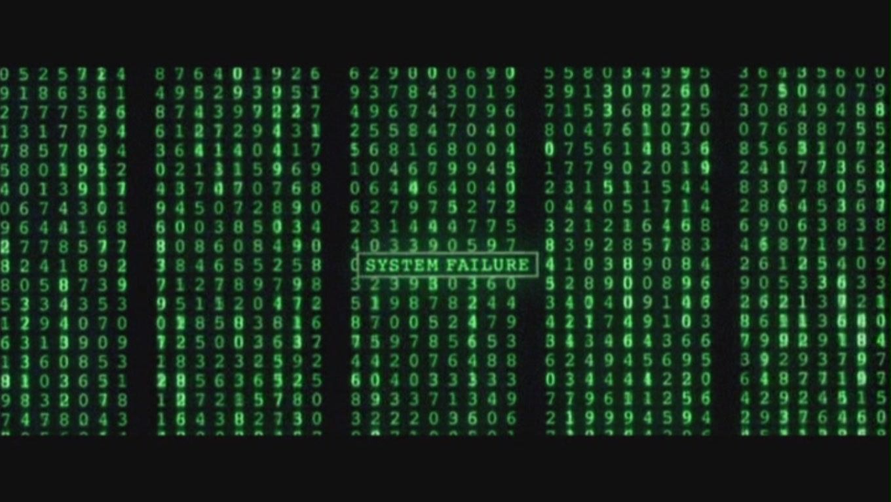

9 다변량 분석 (Multivariate Analysis)

많은 데이터 세트는 동일한 대상(환자, 샘플 또는 유기체)에 대해 측정된 여러 변수로 구성됩니다. 예를 들어, 우리는 천 명의 환자에 대해 키, 몸무게, 나이와 같은 생체 특징뿐만 아니라 혈압, 혈당, 심박수와 같은 임상 변수 및 유전 데이터를 가질 수 있습니다. 다변량 분석(multivariate analysis)의 존재 이유(raison d’être)는 측정된 서로 다른 변수들 간의 연결 또는 연관성을 조사하는 것입니다. 대개 데이터는 각 대상에 대해 하나의 행, 각 변수가 하나의 열을 가진 표 형식의 데이터 구조로 보고됩니다. 이하에서는 각 변수가 수치형인 특수한 경우에 초점을 맞출 것이며, 따라서 R에서 데이터 구조를 행렬(matrix) 로 나타낼 수 있습니다.
행렬의 열들이 모두 서로 독립적(무관)이라면, 우리는 단순히 각 열을 별도로 공부하고 표준 “단변량(univariate)” 통계 처리를 하나씩 수행할 수 있습니다; 이들을 행렬로 공부해서 얻는 이점은 없을 것입니다.
더 자주, 패턴과 의존성이 존재할 것입니다. 예를 들어 세포 생물학에서 우리는 증식률(proliferation rate)이 많은 유전자의 발현에 동시에 영향을 미친다는 것을 알고 있습니다. 환자 유래 세포의 많은 샘플(행)에 대해 25,000개의 유전자(열) 발현을 공부하면서, 우리는 많은 유전자가 함께 작용하여 양(+)의 상관관계를 갖거나 음(-)의 상관관계를 갖는다는 것을 알아차립니다. 각 유전자를 별도로만 공부한다면 우리는 많은 중요한 정보를 놓칠 것입니다. 유전자들 사이의 중요한 연결은 우리가 데이터를 전체적으로 고려할 때만 감지 가능합니다: 각 행은 동일한 관찰 단위에 대해 이루어진 많은 측정값들을 나타냅니다. 하지만 한꺼번에 고려해야 할 25,000차원의 변동을 갖는 것은 벅찬 일입니다; 우리는 너무 많은 정보를 잃지 않으면서 우리 데이터를 더 적은 수의 가장 중요한 차원1으로 줄이는 방법을 보여줄 것입니다.
1 우리는 아래에서 이러한 차원 축소(dimension reduction)의 아이디어를 훨씬 더 자세히 설명할 것입니다. 당분간은 우리가 4차원 세계에 살고 있다는 것을 기억합시다.
이 장에서는 고처리량 실험에서 마주치는 다변량 데이터 행렬의 많은 예시뿐만 아니라, 여러분의 직관을 높여줄 좀 더 기초적인 예시들을 제시합니다. 우리는 이 장에서 차원 축소 방법인 주성분 분석(Principal Component Analysis), 약어로 PCA 에 초점을 맞출 것입니다. 우리는 알고리즘에 대한 기하학적 설명뿐만 아니라 PCA 분석의 출력을 해석하는 데 도움이 되는 시각화 자료들을 제공할 것입니다.
이 장에서 우리는 다음을 수행할 것입니다:
생물학적 데이터 연구에서 나타나는 행렬의 예시들을 살펴봅니다.
변수 간의 상관관계를 이해하기 위해 차원 축소를 수행합니다.
다변량 분석을 시작하기 전에 데이터를 전처리하고, 스케일을 조정하고, 중앙에 맞춥니다(center).
원래의 측정값보다 더 유용한, 주성분(principal components, PC)이라 불리는 새로운 변수들을 구축합니다.
PCA의 “내부 구조”인 행렬의 특잇값 분해(singular value decomposition, SVD)를 살펴봅니다.
이 분해가 무엇을 달성하는지 시각화하고 주성분의 수를 선택하는 방법을 배웁니다.
처음부터 끝까지 완전한 PCA 분석을 실행해 봅니다.
결과의 더 유용한 해석을 가능하게 하기 위해 요인 공변량(factor covariates)을 PCA 맵에 투영합니다.
9.1 7.2 데이터란 무엇인가? 행렬과 그 동기
먼저, 측정값 표를 나타내는 데 사용되는 직사각형 행렬(matrices) 의 예시들을 살펴보겠습니다. 각 행렬에서 행과 열은 특정 개체를 나타냅니다.
거북이(Turtles): 기본 원리를 이해하는 데 도움이 될 간단한 데이터 세트는 거북이(painted turtles)에 대한 세 가지 차원의 생체 측정값 행렬입니다 (Jolicoeur and Mosimann 1960).
turtles = read.table("../data/PaintedTurtles.txt", header = TRUE)
turtles[1:4, ]
sex length width height
1 f 98 81 38
2 f 103 84 38
3 f 103 86 42
4 f 105 86 40마지막 세 열은 길이 측정값(밀리미터 단위)인 반면, 첫 번째 열은 각 동물의 성별을 알려주는 요인 변수입니다.
운동선수(Athletes): 이 행렬은 스포츠 세계의 흥미로운 예시입니다. 10종 경기(decathlon)의 10개 종목에 대한 33명 선수의 성적을 보고합니다: m100, m400 및 m1500은 각각 100미터, 400미터, 1500미터 달리기 시간(초)입니다; m110은 110미터 허들 완주 시간입니다; pole은 장대높이뛰기 높이, high와 long은 각각 높이뛰기와 멀리뛰기 결과이며 모두 미터 단위입니다; weight, disc, javel은 선수들이 던진 포환, 원반, 창의 거리(미터)입니다. 처음 세 명의 선수에 대한 변수들은 다음과 같습니다:
data("olympic", package = "ade4")
athletes = setNames(olympic$tab,
c("m100", "long", "weight", "high", "m400", "m110", "disc", "pole", "javel", "m1500"))
athletes[1:3, ]
m100 long weight high m400 m110 disc pole javel m1500
1 11.25 7.43 15.48 2.27 48.90 15.13 49.28 4.7 61.32 268.95
2 10.87 7.45 14.97 1.97 47.71 14.46 44.36 5.1 61.76 273.02
3 11.18 7.44 14.20 1.97 48.29 14.81 43.66 5.2 64.16 263.20세포 유형(Cell Types): Holmes 등 (2005)은 서로 다른 피험자로부터 정렬된 T 세포 모집단의 유전자 발현 프로필을 연구했습니다. 열은 유전자 발현 측정값의 하위 집합이며, 세포 유형 간에 차등 발현을 보이는 156개 유전자에 대응합니다.
load("../data/Msig3transp.RData")
round(Msig3transp,2)[1:5, 1:6]
X3968 X14831 X13492 X5108 X16348 X585
HEA26_EFFE_1 -2.61 -1.19 -0.06 -0.15 0.52 -0.02
HEA26_MEM_1 -2.26 -0.47 0.28 0.54 -0.37 0.11
HEA26_NAI_1 -0.27 0.82 0.81 0.72 -0.90 0.75
MEL36_EFFE_1 -2.24 -1.08 -0.24 -0.18 0.64 0.01
MEL36_MEM_1 -2.68 -0.15 0.25 0.95 -0.20 0.17박테리아 종 풍부도(Bacterial Species Abundances): 카운트 행렬은 미생물 생태학 연구에서 사용됩니다(4장에서 보았듯이). 여기에서 열은 수치 태그로 식별되는 서로 다른 박테리아 종(또는 운영상의 분류 단위인 OTU)을 나타냅니다. 행은 그것들이 측정된 샘플에 따라 레이블이 붙어 있으며, (정수) 숫자는 각 샘플에서 각 OTU가 관찰된 횟수를 나타냅니다.
data("GlobalPatterns", package = "phyloseq")
GPOTUs = as.matrix(t(phyloseq::otu_table(GlobalPatterns)))
GPOTUs[1:4, 6:13]
OTU Table: [4 taxa and 8 samples]
taxa are rows
246140 143239 244960 255340 144887 141782 215972 31759
CL3 0 7 0 153 3 9 0 0
CC1 0 1 0 194 5 35 3 1
SV1 0 0 0 0 0 0 0 0
M31Fcsw 0 0 0 0 0 0 0 0
행렬 항목이 0이 되는 경향에 주목하세요. 우리는 이러한 데이터를 희소(sparse) 하다고 부릅니다.
mRNA 리드(reads): RNA-Seq 전사체 데이터는 각 생물학적 샘플에서 각 유전자2에 매핑된 시퀀싱 리드의 수를 보고합니다. 우리는 8장에서 이 유형의 데이터를 자세히 공부할 것입니다.
2 또는 엑손과 같은 유전자 하위 구조.
library("SummarizedExperiment")
data("airway", package = "airway")
assay(airway)[1:3, 1:4]
SRR1039508 SRR1039509 SRR1039512 SRR1039513
ENSG00000000003 679 448 873 408
ENSG00000000005 0 0 0 0
ENSG00000000419 467 515 621 365RNA-Seq 분야에서는 –위의 airway 데이터와 같이– 행에 유전자를, 열에 샘플을 보고하는 것이 관례입니다. 이러한 서로 다른 관례는 쉽게 오류를 초래하므로, 주의를 기울일 가치가 있습니다3. 단백질 프로필(Proteomic profiles): 여기서 열은 정렬된 질량 분석(mass spectroscopy) 피크 또는 그들의 (m/z)-비율을 통해 식별된 분자들입니다; 행렬의 항목들은 측정된 강도입니다4.
3 바이오컨덕터 프로젝트는 이러한 관례가 명시적으로 고정된 데이터 컨테이너를 정의함으로써 사용자와 개발자가 그러한 모호함을 피할 수 있도록 돕고자 합니다. 8장에서 우리는 SummarizedExperiment 클래스의 예시를 보게 될 것입니다.
4 더 자세한 내용은 예를 들어 위키백과를 참조하세요.
metab = t(as.matrix(read.csv("../data/metabolites.csv", row.names = 1)))
metab[1:4, 1:4]
146.0985388 148.7053275 310.1505057 132.4512963
KOGCHUM1 29932.36 17055.70 1132.82 785.5129
KOGCHUM2 94067.61 74631.69 28240.85 5232.0499
KOGCHUM3 146411.33 147788.71 64950.49 10283.0037
WTGCHUM1 229912.57 384932.56 220730.39 26115.2007
여기서 보았던 많은 행렬들에서, 샘플(피험자)과 측정된 특징들에 대한 중요한 정보는 행이나 열 이름에 저장되어 있으며, 종종 어떤 임시방편적인 문자열 연결을 통해 이루어집니다. 이는 가용한 모든 정보를 저장하기에 최선의 장소가 아니며, 금방 한계에 부딪히고 오류를 일으키기 쉽습니다. 훨씬 더 나은 접근 방식은 바이오컨덕터의 SummarizedExperiment 클래스입니다.
태스크
질량 분석 실행 중 특정 (m/z) 점수에 대해 피크가 감지되지 않았을 때, metab에는 0이 기록되었습니다. 유사하게, GPOTUs나 airway 객체에서의 0은 일치하는 시퀀싱 리드가 감지되지 않았을 때 발생합니다. 이러한 데이터 행렬들에서 0의 빈도를 표로 만들어 보세요.
질문 7.1
이러한 데이터 행렬의 열들은 보통 무엇이라고 불리나요?
이러한 각 예시에서 행렬의 행은 무엇인가요?
행렬의 셀은 무엇을 나타내나요?
데이터 행렬의 이름이
athletes이고 다섯 번째 선수의 세 번째 변수 값을 보고 싶다면, R에 무엇을 입력하시겠습니까?
9.1.1 7.2.1 저차원 데이터 요약 및 준비
{kind=link}
그림 7.1: xkcd: 저차원이란 무엇을 의미할까요? 우리는 3차원에 살고 있으며, 시간을 포함하면 4차원입니다. 평면은 2차원이고, 선은 1차원입니다. 점은 0차원이라고 합니다. 만화에서 참조한 재미있는 소설은 Abbott (1884)를 참조하세요.
만약 우리가 하나의 변수만을 공부한다면, 즉 거북이 행렬의 세 번째 열5만 본다면, 우리는 1차원 데이터를 보고 있는 것입니다. 그러한 벡터, 예를 들어 모든 거북이의 무게는 3.6절에서 보았던 히스토그램과 같은 플롯을 통해 시각화될 수 있습니다. 우리가 평균이나 중앙값과 같은 하나의 숫자 요약치를 계산한다면, 우리는 우리 1차원 데이터의 0차원 요약치를 만든 것입니다. 이것은 이미 차원 축소의 한 예입니다.
5 행렬 (X)의 세 번째 열은 수학적으로 ({x}_{})로 표기하거나 R에서 X[, 3]을 사용하여 접근합니다.
3장에서 우리는 2차원 산점도를 공부했습니다. 관측치가 너무 많을 때, 데이터를 (육각형) 빈으로 그룹화하는 것이 유익할 수 있음을 보았습니다: 이들은 2차원 히스토그램입니다. 일련의 관측치에 대해 함께 측정된 두 변수((x)와 (y))를 고려할 때, 상관 계수 는 변수들이 어떻게 공동 변동(co-vary)하는지를 측정합니다. 이는 2차원 데이터의 단일 숫자 요약치입니다. 그 공식은 요약치인 ({x})와 ({y})를 포함합니다:
[ = { } ]
In R, we use the cor function to calculate its value. Applied to a matrix this function computes all the two way correlations between continuous variables. In Chapter 9 we will see how to analyse multivariate categorical data.
질문 7.2
거북이 데이터의 측정값들 사이의 모든 상관관계 행렬을 계산해 보세요. 무엇을 발견했나요?
해결책
범주형 변수를 제외하고 행렬을 계산합니다.
cor(turtles[, -1])
length width height
length 1.0000000 0.9783116 0.9646946
width 0.9783116 1.0000000 0.9605705
height 0.9646946 0.9605705 1.0000000우리는 이 정사각 행렬이 대칭이며 값들이 모두 1에 가깝다는 것을 알 수 있습니다. 대각선 값은 항상 1입니다.
다음 두 질문에서 살펴보는 것과 같은 시각적 디스플레이를 사용하여 이러한 간단한 1차원 및 2차원 요약 통계량을 확인하는 것으로 다차원 분석을 시작하는 것이 항상 유익합니다.
질문 7.3
거북이에 대한 세 가지 생체 측정값에 대해, 대각선에 1차원 히스토그램을 포함한 모든 쌍별 산점도를 생성하세요. GGally 패키지를 사용하세요.
이 데이터의 기저에 있는 “진정한 차원”을 추측해 보세요.
해결책
library("ggplot2")
library("dplyr")
library("GGally")
ggpairs(turtles[, -1], axisLabels = "none")
그림 7.2를 보면, 세 변수 모두 높은 상관관계를 가지고 있으며 대부분 거북이의 크기 로 해석될 수 있는 동일한 “기저” 변수를 반영하는 것으로 보입니다.
질문 7.4
athletes 데이터의 변수들 사이의 모든 쌍별 상관관계를 계산하고 그 행렬을 히트맵으로 표시해 보세요. 무엇을 알 수 있나요?
해결책
library("pheatmap")
pheatmap(cor(athletes), cell.width = 10, cell.height = 10)
그림 7.3은 10개의 변수가 달리기, 던지기, 점프라는 그룹으로 어떻게 군집화되는지 보여줍니다.
9.1.2 7.2.2 데이터 전처리
많은 경우, 서로 다른 변수들은 서로 다른 단위로 측정되므로, 서로 다른 기준선과 서로 다른 스케일(scales)6을 가집니다. 이들은 원래의 형태로는 직접적으로 비교할 수 없습니다.
6 스케일의 일반적인 척도는 범위와 표준 편차입니다. 예를 들어, 110미터 허들 시간은 표준 편차 0.51과 함께 14.18에서 16.2 사이인 반면, 1500미터 완주 시간은 표준 편차 13.66과 함께 256.64에서 303.17 사이입니다; 이는 10배 이상 더 큽니다. 더욱이 athletes 데이터는 서로 다른 단위(초, 미터)의 측정값도 포함하고 있는데, 이들의 선택은 임의적입니다(길이는 센티미터나 피트로 기록될 수도 있고, 시간은 밀리초로 기록될 수도 있습니다).
따라서 PCA 및 다른 많은 방법들의 경우, 비교를 의미 있게 만들기 위해 수치들을 어떤 공통적인 스케일로 변환해야 합니다. 중앙화(Centering) 는 평균을 빼는 것을 의미하며, 중앙화된 데이터의 평균은 원점에 위치하게 됩니다. 스케일링(Scaling) 또는 표준화(Standardizing) 는 표준 편차로 나누는 것을 의미하며, 새로운 표준 편차는 (1)이 됩니다. 사실 우리는 상관 계수를 계산할 때(식 7.1) 이미 이러한 연산들을 접했습니다: 상관 계수는 단순히 중앙화되고 스케일링된 변수들의 벡터 곱입니다. 이러한 연산을 수행하기 위해 R에는 scale 함수가 있으며, 행렬이나 데이터 프레임이 주어졌을 때의 기본 거동은 모든 열의 평균을 0으로, 표준 편차를 1로 만드는 것입니다.
질문 7.5
거북이 데이터의 평균과 표준 편차를 계산한 다음,
scale함수를 사용하여 연속형 변수들을 중앙화하고 표준화하세요. 이를scaledTurtles라고 부르고,scaledTurtles의 평균과 표준 편차의 새로운 값을 확인해 보세요.거북이 데이터의 스케일링 및 중앙화된 너비(width)와 높이(height) 변수의 산점도를 만들고 점들에 성별에 따른 색상을 입히세요.
해결책
apply(turtles[,-1], 2, sd)
length width height
20.481602 12.675838 8.392837
apply(turtles[,-1], 2, mean)
length width height
124.68750 95.43750 46.33333
scaledTurtles = scale(turtles[, -1])
apply(scaledTurtles, 2, mean)
length width height
-1.432050e-18 1.940383e-17 -2.870967e-16
apply(scaledTurtles, 2, sd)
length width height
1 1 1
data.frame(scaledTurtles, sex = turtles[, 1]) %>%
ggplot(aes(x = width, y = height, group = sex)) +
geom_point(aes(color = sex)) + coord_fixed()
우리는 이미 4장과 5장에서 log와 asinh 함수를 사용한 다른 데이터 변환 선택지들을 접했습니다. 이러한 변환의 목적은 (대개) 분산 안정화(variance stabilization)입니다. 즉, 동적 범위의 서로 다른 부분에서 서로 다른 변수 가 아닌 동일한 변수 의 반복 측정값 분산을 더 비슷하게 만드는 것입니다. 이와 대조적으로 위에서 설명한 표준화 변환은 서로 다른 변수 의 스케일(평균과 표준 편차로 측정됨)을 동일하게 만드는 것을 목표로 합니다.
때로는 변수들이 진정으로 중요도가 다르기 때문에 서로 다른 스케일로 남겨두는 것이 더 나을 수도 있습니다. 만약 원래의 스케일이 유의미하다면, 데이터를 있는 그대로 두어야 합니다. 다른 경우에, 변수들은 사전적으로 알려진 서로 다른 정밀도를 가집니다. 9장에서 우리는 그러한 변수들에 가중치를 부여하는 여러 방법들을 살펴볼 것입니다.
데이터를 전처리한 후, 우리는 차원 축소 를 통한 데이터 단순화 를 수행할 준비가 되었습니다.

도움이 될 만한 챕터가 포함된 유용한 책으로는 기초적인 설명을 담은 Flury (1997)와 상세한 수학적 접근 방식을 담은 Mardia, Kent, Bibby (1979)가 있습니다.
9.2 7.3 차원 축소
우리는 여러 가지 서로 다른 관점에서 차원 축소를 설명할 것입니다. 이는 1901년에 Karl Pearson (Pearson 1901)에 의해 두 변수 산점도를 단일 좌표로 줄이는 방법으로 발명되었습니다. 1930년대에는 통계학자들에 의해 동일한 대상에 대해 수행된 일련의 심리 테스트 결과를 요약하는 데 사용되었습니다 (Hotelling 1933); 이로써 한꺼번에 테스트된 많은 변수들을 요약하는 종합 점수(overall scores)를 제공하게 되었습니다.
Principal 과 principle 은 서로 다른 뜻을 가진 두 개의 다른 단어입니다. 따라서 이들을 혼동하지 마세요. PCA의 경우, 그것은 항상 principal 입니다.
이러한 주요(principal) 점수라는 아이디어가 주성분 분석(Principal Component Analysis, 약어로 PCA)이라는 이름에 영감을 주었습니다. PCA는 군집화에서와 마찬가지로 모든 변수를 동일한 상태(status) 를 가진 것으로 취급하기 때문에 비지도 학습(unsupervised learning) 기법이라 불립니다. 우리는 한 특정한 변수의 값을 다른 변수들로부터 예측하거나 설명하려는 것이 아니라, 오히려 모든 변수들에 대한 기저 구조의 수학적 모델을 찾으려는 것입니다. PCA는 기본적으로 변수들 사이의 관계와 관측치들 사이의 관계를 유용한 방식으로 보여주는 맵(maps)을 생성하는 탐색적 기법입니다.
우리는 먼저 이 다변량 분석이 데이터에 무엇을 하는지에 대한 맛보기를 제공하겠습니다. 선형 대수학을 통한 이러한 방법들의 우아한 수학적 공식화가 존재하지만, 여기서는 그 사용을 최소화하고 시각화와 데이터 예시에 집중할 것입니다.
우리는 고차원 공간의 점들을 낮은 차원으로 투영하는 기하학적 투영(projections) 을 사용합니다. 그림 7.5는 벡터 ({v})에 의해 생성된 선 위로 점 (A)를 투영하는 것을 보여줍니다.

그림 7.5: 점 (A)가 벡터 (v)에 의해 생성된 빨간색 선 위로 투영됩니다. 점선 투영선은 빨간색 선에 수직(또는 직교(orthogonal) )합니다. 투영선과 빨간색 선의 교차점을 점 (A)의 벡터 (v)에 의해 생성된 빨간색 선 위로의 직교 투영이라고 부릅니다.
PCA는 선형(linear) 기법으로, 변수들 사이의 선형 관계를 찾고 원래 변수들의 선형 함수인 새로운 변수들을 사용한다는 것을 의미합니다 ((f(ax+by)=af(x)+b(y))). 선형성 제약 조건은 계산을 특히 쉽게 만듭니다. 9장에서 우리는 비선형 기법들을 살펴볼 것입니다.
9.2.1 7.3.1 저차원 투영
여기에 athletes 데이터를 사용하여 2차원 데이터를 선 위로 투영하는 한 가지 방법을 보여줍니다. 아래 코드는 그림 7.6을 생성하는 데 사용된 전처리 및 플로팅 단계를 제공합니다:
athletes = data.frame(scale(athletes))
ath_gg = ggplot(athletes, aes(x = weight, y = disc)) +
geom_point(size = 2, shape = 21)
ath_gg + geom_point(aes(y = 0), colour = "red") +
geom_segment(aes(xend = weight, yend = 0), linetype = "dashed"){kind=link}
그림 7.6: 가로 (x)축(()y=0으로 정의됨)으로의 투영을 빨간색으로 보여주는 두 변수의 산점도이며 투영선은 점선으로 나타납니다.
태스크
그림 7.6에서 빨간색 점들의 분산을 계산해 보세요.
(y)축으로의 투영선과 투영된 점들을 보여주는 플롯을 만들어 보세요.
수직 (y)축으로 투영된 점들의 분산을 계산해 보세요.
9.2.2 7.3.2 2차원 데이터를 어떻게 선으로 요약할까요?
일반적으로 우리가 2차원(평면)에서 1차원(선)으로 투영할 때 점들에 대한 정보를 잃게 됩니다. 그림 7.6에서 weight 변수에 대해 했던 것처럼 원래의 좌표만 사용한다면, 우리는 disc 변수에 대한 모든 정보를 잃게 됩니다. 우리의 목표는 두 변수 모두에 대해 가능한 한 많은 정보를 유지하는 것입니다. 사실 점 구름을 선 위로 투영하는 방법은 여러 가지가 있습니다. 하나는 회귀선(regression lines) 이라 알려진 것을 사용하는 것입니다. R에서 이러한 선들이 어떻게 구축되는지 살펴보겠습니다.
9.2.2.1 한 변수를 다른 변수에 대해 회귀 분석하기
선형 회귀(linear regression)를 보셨다면, 산점도를 요약하는 선을 계산하는 방법을 이미 알고 계실 것입니다; 선형 회귀 는 한 방향, 즉 반응 변수 방향의 잔차 제곱합을 최소화하는 것을 우선시하는 지도(supervised) 방법입니다.
9.2.2.2 weight에 대한 disc 변수의 회귀 분석.
그림 7.7에서는 회귀선을 찾기 위해 lm(선형 모델) 함수를 사용합니다. 그 기울기와 절편은 결과 객체 reg1의 coefficients 슬롯에 있는 값들에 의해 주어집니다.
reg1 = lm(disc ~ weight, data = athletes)
a1 = reg1$coefficients[1] # intercept
b1 = reg1$coefficients[2] # slope
pline1 = ath_gg + geom_abline(intercept = a1, slope = b1,
col = "blue", linewidth = 1.5)
pline1 + geom_segment(aes(xend = weight, yend = reg1$fitted),
colour = "red", arrow = arrow(length = unit(0.15, "cm")))
그림 7.7: 파란색 선은 (빨간색으로 표시된) 수직 잔차의 제곱합을 최소화합니다.
9.2.2.3 discus에 대한 weight의 회귀 분석.
그림 7.8은 두 변수의 역할을 바꾸었을 때 생성되는 선을 보여줍니다; weight가 반응 변수가 됩니다.
reg2 = lm(weight ~ disc, data = athletes)
a2 = reg2$coefficients[1] # intercept
b2 = reg2$coefficients[2] # slope
pline2 = ath_gg + geom_abline(intercept = -a2/b2, slope = 1/b2,
col = "darkgreen", linewidth = 1.5)
pline2 + geom_segment(aes(xend=reg2$fitted, yend=disc),
colour = "orange", arrow = arrow(length = unit(0.15, "cm"))){kind=link}
그림 7.8: 녹색 선은 (주황색으로 표시된) 수평 잔차의 제곱합을 최소화합니다.
각각의 회귀선인 그림 7.7과 7.8은 disc와 weight 사이의 대략적인 선형 관계를 제공합니다. 하지만 그 관계는 우리가 어느 변수를 예측 변수로 선택하고 어느 변수를 반응 변수로 선택하느냐에 따라 달라집니다.
질문 7.6
그림 7.7의 파란색 회귀선 상에 있는 투영된 점들의 분산은 얼마나 큰가요? 이를 원래의 축인 weight와 disc로 투영했을 때의 데이터 분산과 비교해 보세요.
해결책
피타고라스의 정리는 직각 삼각형의 빗변 길이의 제곱이 다른 두 변의 길이의 제곱의 합과 같다는 것을 알려주며, 우리는 이를 다음과 같이 적용합니다:
var(athletes$weight) + var(reg1$fitted)
[1] 1.650204변수들을 스케일링했으므로, 원래의 축인 weight와 disc를 따른 점들의 분산은 1입니다.
9.2.2.4 양방향 거리를 최소화하는 선
그림 7.9는 데이터 점들로부터의 직교(수직) 투영의 제곱합을 최소화하도록 선택된 선을 보여줍니다; 우리는 이를 주성분(principal component) 선이라고 부릅니다. 우리가 선을 맞춘 세 가지 방식(그림 7.7–7.9)이 모두 한 플롯에 표시된 결과가 그림 7.10에 나와 있습니다.
xy = cbind(athletes$disc, athletes$weight)
svda = svd(xy)
pc = xy %*% svda$v[, 1] %*% t(svda$v[, 1])
bp = svda$v[2, 1] / svda$v[1, 1]
ap = mean(pc[, 2]) - bp * mean(pc[, 1])
ath_gg + geom_segment(xend = pc[, 1], yend = pc[, 2]) +
geom_abline(intercept = ap, slope = bp, col = "purple", linewidth = 1.5)
그림 7.9: 보라색 주성분 선은 직교 투영의 제곱합을 최소화합니다.

그림 7.10: 파란색 선은 수직 잔차의 제곱합을 최소화하고, 녹색 선은 수평 잔차를 최소화하며, 주성분 이라 불리는 보라색 선은 직교 투영을 최소화합니다. 세 선의 기울기 순서에 주목하세요.
질문 7.7
보라색 선의 기울기에 어떤 특징이 있나요?
원래의(스케일링되지 않은) 변수들에 대해 플롯을 다시 그려보세요. 어떤 일이 일어나나요?
해결책
여기서 계산된 선들은 단위의 선택에 의존합니다. 두 변수 모두에 대해 표준 편차를 1로 만들었기 때문에, PCA 선은 두 회귀선 사이의 정확히 중간을 가르는 대각선입니다. 데이터가 평균을 뺌으로써 중앙에 맞춰졌으므로, 선은 원점 ((0,0))을 통과합니다.
질문 7.8
보라색 선 위에 있는 점들의 분산을 계산해 보세요.
해결책
우리는 플롯을 만들 때 점들의 좌표를 계산했으며, 이들은 pc 벡터에 있습니다:
apply(pc, 2, var)
[1] 0.9031761 0.9031761
sum(apply(pc, 2, var))
[1] 1.806352우리는 이 축을 따른 분산이 질문 7.6에서 계산한 다른 분산들보다 크다는 것을 알 수 있습니다.
피타고라스의 정리는 여기서 두 가지 흥미로운 사실을 알려줍니다:
수평 및 수직 방향 모두에서 최소화하고 있다면, 사실 우리는 각 점으로부터 선으로의 직교 투영을 최소화하고 있는 것입니다.
점들의 전체 가변성은 점들을 무게 중심(데이터가 중앙화되어 있다면 원점(0,0))으로 투영한 제곱합으로 측정됩니다. 이를 점 구름의 전체 분산 또는 관성(inertia) 이라고 합니다. 이 관성은 선 위로의 투영 제곱합과 그 선을 따른 분산의 합으로 분해될 수 있습니다. 고정된 분산에 대해, 투영 거리를 최소화하는 것은 또한 그 선을 따른 분산을 최대화합니다. 종종 우리는 첫 번째 주성분을 분산이 최대인 선으로 정의합니다.
9.3 7.4 새로운 선형 결합
이전 섹션에서 찾은 PC 선은 다음과 같이 쓸 수 있습니다.
이미지 출처: Sara Holmes
[ PC = + . ]
주성분은 원래 측정된 변수들의 선형 결합(linear combinations) 이며, 새로운 좌표계 를 제공합니다. 선형 결합 이 실제로 무엇인지 이해하기 위해 비유를 들어보겠습니다. 건강한 주스 믹스를 만들 때 다음과 같은 레시피를 따를 것입니다:
[ \[\begin{align} V &= 2 \times \text{Beet} + 1 \times \text{Carrot} \\ &\+ \tfrac{1}{2} \text{Gala} + \tfrac{1}{2} \text{GrannySmith} \\ &\+ 0.02 \times \text{Ginger} + 0.25 \times \text{Lemon}. \end{align}\] ]
이 레시피는 개별 주스 유형(원래 변수들)의 선형 결합입니다. 결과는 새로운 변수 (V)이며, 계수 ((2,1,,,0.02,0.25))는 로딩(loadings) 이라고 불립니다.
질문 7.9
주스 한 잔의 칼로리를 어떻게 계산하시겠습니까?
9.3.1 7.4.1 최적의 선
변수들의 선형 결합은 우리가 2차원 산점도 평면에서 선을 구축했던 것과 같은 방식으로 고차원에서의 선을 정의합니다. 그 사례에서 보았듯이, 데이터를 투영할 선을 선택하는 방법은 여러 가지가 있지만, 우리의 목적에 부합하는 ‘최선의’ 선이 존재합니다.
모든 변수에 걸친 모든 점의 전체 분산은 분해될 수 있습니다. PCA에서 우리는 점들과 임의의 선 사이의 거리 제곱합이 선까지의 거리와 선을 따른 분산으로 분해될 수 있다는 사실을 이용합니다.
우리는 주성분이 선까지의 거리를 최소화하며, 또한 선을 따른 투영의 분산을 최대화한다는 것을 보았습니다.
왜 선을 따른 분산을 최대화하는 것이 좋은 아이디어일까요? 3차원에서 2차원으로의 투영에 대한 또 다른 예시를 살펴봅시다. 사실, 인간의 시각은 그러한 차원 축소에 의존합니다:

질문 7.10
그림 7.11에는 3차원 물체의 2차원 투영이 있습니다. 이 물체는 무엇일까요?
질문 7.11
그림 7.11과 7.13 중 어느 투영이 더 정보가 많다고 생각하시나요? 그 이유는 무엇인가요?
해결책
그림자의 면적을 최대화하는 투영이 더 많은 ’정보’를 보여준다고 주장할 수 있습니다.
9.4 7.5 PCA 워크플로
{kind=link}
그림 7.12: PCA 처리 과정 중 많은 선택이 이루어져야 합니다.
PCA는 가장 큰 관성/가변성을 보여주는 축을 찾고, 그 방향의 가변성을 제거한 다음, 그 다음으로 좋은 직교 축을 찾는 과정을 반복하는 원리에 기반합니다. 사실 반복해서 실행할 필요 없이, 특잇값 분해(Singular Value Decomposition, SVD) 라고 불리는 하나의 선형 대수 연산으로 모든 축을 찾을 수 있습니다(이에 대한 자세한 내용은 아래에서 다룰 것입니다).
그림 7.12의 다이어그램에서, 먼저 평균과 분산이 계산되고 공분산 행렬로 직접 작업할지 아니면 상관 행렬로 작업할지 선택해야 함을 알 수 있습니다. 다음 단계는 데이터에 유의미하다고 간주되는 성분의 수인 (k)를 선택하는 것입니다. 우리는 (k)를 근사(approximation)의 계수(rank)라고 말합니다. 최적의 (k)를 선택하는 것은 어려운 문제이며, 아래에서 어떻게 접근해야 할지 논의할 것입니다. (k)를 선택하려면 연속적인 주성분들에 의해 설명되는 분산의 플롯을 살펴보아야 합니다. 일단 (k)를 선택했다면, 새로운 (k)차원 하위 공간으로의 데이터 투영을 진행할 수 있습니다.
PCA 워크플로의 최종 결과는 변수와 샘플 모두에 대한 유용한 맵(maps) 입니다. 이러한 맵들이 어떻게 구축되는지 이해하면 그로부터 얻을 수 있는 정보를 극대화할 수 있을 것입니다.
9.5 7.6 PCA의 내부 구조: 계수 축소 (Rank reduction)
이 섹션은 선형 대수학 배경 지식이 희미한 기억으로만 남아 있는 분들을 위한 짧은 섹션입니다. 너무 많은 수식 없이 PCA의 기초가 되는 특잇값 분해 방법에 대한 직관을 제공하고자 합니다.

그림 7.13: 그림 7.11에서 보여준 것과 동일한 물체의 또 다른 2차원 투영. 여기서의 관점이 더 정보가 많습니다. 일반적으로 점들의 퍼짐(다시 말해 분산)이 최대가 되도록 관점을 선택하는 것이 가장 많은 정보를 제공합니다. 우리는 가능한 한 많은 변동을 보고 싶어 하며, 그것이 바로 PCA가 하는 일입니다.
행렬의 특잇값 분해는 수평 및 수직 벡터(특잇값 벡터라 불림)와 정규화 값(특잇값이라 불림)을 찾습니다. 이전과 마찬가지로, 분해를 생성하는 데 사용되는 실제 역설계(reverse engineering)를 수행하기 전에 순방향 생성(forward-generative) 설명을 먼저 제공하겠습니다. 각 단계의 의미를 보정하기 위해, 실제 데이터의 복잡함으로 넘어가기 전에 인위적인 예시부터 시작하겠습니다.
9.5.1 7.6.1 계수 1 행렬 (Rank-one matrices)
간단한 생성 모델은 행렬의 계수(rank of a matrix) 의 의미를 보여주고 우리가 이를 실제로 어떻게 찾는지 설명해 줍니다. 두 개의 벡터 (u)(1열 행렬)와 (v^t=t(v))(1행 행렬 — 1열 행렬 (v)의 전치)가 있다고 가정해 봅시다. 예를 들어, (u =( \[\begin{smallmatrix} 1\\2\\3\\4 \end{smallmatrix}\] ))이고 (v =( \[\begin{smallmatrix} 2\\4\\8 \end{smallmatrix}\]))입니다. (v)의 전치는 (v^t = t(v) = (2; 4; 8))로 쓰여집니다. 우리는 다음과 같이 (u)의 복사본에 (v^t)의 각 원소를 차례로 곱합니다:
단계 0:
| X | 2 | 4 | 8 |
|---|---|---|---|
| 1 | |||
| 2 | |||
| 3 | |||
| 4 |
단계 1:
| X | 2 | 4 | 8 |
|---|---|---|---|
| 1 | 2 | ||
| 2 | 4 | ||
| 3 | 6 | ||
| 4 | 8 |
단계 2:
| X | 2 | 4 | 8 |
|---|---|---|---|
| 1 | 2 | 4 | |
| 2 | 4 | 8 | |
| 3 | 6 | 12 | |
| 4 | 8 | 16 |
단계 3:
| X | 2 | 4 | 8 |
|---|---|---|---|
| 1 | 2 | 4 | 8 |
| 2 | 4 | 8 | 16 |
| 3 | 6 | 12 | 24 |
| 4 | 8 | 16 | 32 |
따라서 행렬 (X)의 ((2,3)) 항목(entry), 즉 (x_{2,3})은 (u_2)에 (v_3)를 곱하여 얻어집니다. 우리는 이를 다음과 같이 쓸 수 있습니다:
[ X= \[\begin{pmatrix} 2&4&8\\ 4&8&16\\ 6 &12&24\\ 8&16&32\ end{pmatrix} = u * t(v)= u * v^t \tag{7.3}\] 여기서 우리가 얻은 행렬 \(X\)는 \(u\)와 \(v\) 모두 하나의 열을 가지므로 계수(rank)가 1이라고 합니다. 질문 7.12 왜 \(X = u*v^t\)라고 쓰는 것이 전체 행렬 \(X\)를 모두 적는 것보다 더 경제적이라고 말할 수 있을까요? 해결책 \(X\)는 \(4\times3=12\)개의 원소를 가지는 반면, \(u\)와 \(v\)를 통해서는 단지 \(4+3=7\)개의 숫자로 표현될 수 있습니다. 이러한 압축은 \(u\)나 \(v\)가 더 길어질수록 더욱 인상적입니다. 반면에, 아래에 주어진 3행 4열(12개 숫자)의 또 다른 행렬 \(X\)를 단순화하기 위해 그 과정을 거꾸로 수행하고 싶다고 가정해 봅시다. 정보의 손실 없이 항상 이를 벡터들의 곱으로 비슷하게 표현할 수 있을까요? 그림 7.14와 7.15에 표시된 다이어그램에서, 색상이 칠해진 상자들은 행렬 (7.4)의 셀에 있는 숫자들에 비례하는 면적을 가집니다. [](imgs/SVD-mosaicXplot0.png "그림 7.14: 일부 특수한 행렬들은 분해하기 쉬운 숫자들을 포함하고 있습니다. 이 다이어그램의 각 색상 사각형은 그 안의 숫자에 해당하는 면적을 가집니다.") 그림 7.14: 일부 특수한 행렬들은 분해하기 쉬운 숫자들을 포함하고 있습니다. 이 다이어그램의 각 색상 사각형은 그 안의 숫자에 해당하는 면적을 가집니다. 질문 7.13 여기에 우리가 분해하고 싶은 행렬 \(X\)가 있습니다. \[ \begin{array}{rrrrr} \hline \large X & x_{.,1} & x_{.,2} & x_{.,3} & x_{.,4} \\ \hline x_{1.} & 780 & 936 & 1300 & 728\\ x_{2.} & 75 & 90 & 125 & 70\\ x_{3.} & 540 & 648 & 900 & 504\\ \hline \end{array} \tag{7.4}\] \(X\)는 그림 7.14에서 일련의 사각형들로 다시 그려졌습니다. 사각형의 변의 값들을 곱했을 때 해당 숫자들이 나오도록 하려면 흰색 \(u\)와 \(v\) 상자에 어떤 숫자들을 넣을 수 있을까요? \(X\)처럼 완벽하게 "직사각형"인 특수한 성질을 가진 행렬을 계수가 1이라고 합니다. 우리는 \(X\)의 숫자들을 사각형의 면적으로 나타낼 수 있으며, 여기서 사각형의 변들은 측면 벡터(\(u\)와 \(v\))에 있는 값들에 의해 주어집니다. :\n") (a) :\n") (b) :\n") (c) 그림 7.15: 셀 안의 숫자들은 (a), (b), (c)에서 상응하는 여백(margins)의 곱과 같습니다. 우리는 여러 가지 방식으로 곱을 통해 셀을 만들 수 있습니다. (c)에서는 여백의 노름(norm)이 1이 되도록 강제합니다. 그림 7.15에서 우리는 \(X\)의 분해가 유일하지 않다는 것을 알 수 있습니다: 벡터 \(u\)와 \(v\)에 대해 여러 가지 후보 선택지가 있습니다. 우리는 각 벡터 원소의 제곱합이 1이 되도록 요구함으로써 선택을 유일하게 만들 것입니다 (벡터 \(v\)와 \(u\)가 노름 1을 갖는다고 말합니다). 그러면 우리는 각 곱에 곱해줄, \(X\)의 "전체적인 스케일"을 나타내는 추가적인 숫자 하나를 추적해야 합니다. 이것이 우리가 왼쪽 상단 모서리에 넣은 값입니다. 이를 첫 번째 특잇값 \(s_1\)이라고 부릅니다. 아래 R 코드에서, 우리는 먼저 `u`, `v`, `s1`의 값을 알고 있다고 가정하고 시작하겠습니다. 나중에 우리를 위해 이들을 찾아주는 함수를 볼 것입니다. R에서 곱셈과 노름 속성을 확인해 봅시다: X = matrix(c(780, 75, 540, 936, 90, 648, 1300, 125, 900, 728, 70, 504), nrow = 3) u = c(0.8196, 0.0788, 0.5674) v = c(0.4053, 0.4863, 0.6754, 0.3782) s1 = 2348.2 sum(u^2) [1] 1 sum(v^2) [1] 1 s1 * u %*% t(v) [,1] [,2] [,3] [,4] [1,] 780 936 1300 728 [2,] 75 90 125 70 [3,] 540 648 900 504 X - s1 * u %*% t(v) [,1] [,2] [,3] [,4] [1,] -0.03419 0.0745 0.1355 0.1221 [2,] 0.00403 0.0159 0.0252 0.0186 [3,] -0.00903 0.0691 0.1182 0.0982 질문 7.14 R에서 `svd(X)`를 시도해 보세요. `svd` 함수의 출력 구성 요소를 주의 깊게 살펴보세요. 이 호출로 생성된 행렬 열의 노름(norm)을 확인하세요. 위의 `s1` = 2348.2 값은 어디에서 왔습니까? 해결책 svd(X)$u[, 1] svd(X)$v[, 1] sum(svd(X)$u[, 1]^2) sum(svd(X)$v[, 1]^2) svd(X)$d 사실, 이 특정한 경우에는 운이 좋았습니다: 우리는 (우리가 신경 쓰는 수치적 정밀도 범위 내에서) 두 번째와 세 번째 특잇값이 0인 것을 볼 수 있습니다. 그래서 우리는 \(X\)가 **계수(rank)** 가 1이라고 말합니다. 일반적인 행렬 \(X\)의 경우, 이와 같은 두 벡터 곱으로 정확하게 작성할 수 있는 경우는 드뭅니다. 다음 하위 섹션에서는 계수가 1이 아닐 때 \(X\)를 어떻게 분해할 수 있는지 보여줍니다: 더 많은 조각이 필요할 뿐입니다. ### 7.6.2 유일한 방식으로 그러한 분해를 어떻게 찾을 수 있습니까? 위의 분해에는 수평 및 수직 특잇값 벡터와 대각선 모서리(특잇값이라 함)의 세 가지 요소가 있었습니다. 이들은 특잇값 분해 함수(`svd`)를 사용하여 찾을 수 있습니다. 예를 들면: Xtwo = matrix(c(12.5, 35.0, 25.0, 25, 9, 14, 26, 18, 16, 21, 49, 32, 18, 28, 52, 36, 18, 10.5, 64.5, 36), ncol = 4, byrow = TRUE) USV = svd(Xtwo) 질문 7.15 `svd` 함수를 호출한 결과인 `USV` 객체를 보십시오. 구성 요소는 무엇입니까? 해결책 names(USV) [1] "d" "u" "v" USV$d [1] 1.350624e+02 2.805191e+01 3.111680e-15 2.290270e-15 따라서 135.1이 첫 번째 특잇값 `USV$d[1]`입니다. 질문 7.16 각각의 연속적인 특잇값 벡터 쌍이 `Xtwo`에 대한 근사를 어떻게 개선하는지 확인해 보세요. 세 번째와 네 번째 특잇값에 대해 무엇을 알 수 있나요? 해결책 Xtwo - USV$d[1] * USV$u[, 1] %*% t(USV$v[, 1]) Xtwo - USV$d[1] * USV$u[, 1] %*% t(USV$v[, 1]) - USV$d[2] * USV$u[, 2] %*% t(USV$v[, 2]) 세 번째와 네 번째 특잇값은 매우 작아서 (반올림 오차 범위 내에서) 근사를 개선하지 못하므로, 우리는 `Xtwo`의 계수가 2라고 결론 내릴 수 있습니다. 다시 말하지만, `Xtwo`와 같은 계수가 2인 행렬을 계수 1인 행렬들의 합으로 쓰는 방법은 여러 가지가 있습니다: 유일성을 보장하기 위해 우리는 특잇값 벡터에 또 다른 7 조건을 부과합니다. 특잇값 분해의 출력 벡터들은 노름이 1일 뿐만 아니라, \(U\) 행렬의 각 열 벡터는 이전의 모든 열 벡터들과 직교(orthogonal)합니다. 우리는 이를 \(u_{\cdot 1} \perp u_{\cdot 2}\)라고 쓰며, 이는 동일한 위치에 있는 값들의 곱의 합이 0임을 의미합니다: \(\sum_i u_{i1} u_{i2} = 0\). \(V\) 행렬에 대해서도 마찬가지입니다. 7 위에서 우리는 벡터의 노름을 1로 선택했었습니다. 태스크 \(U\)와 \(V\) 행렬의 교차 곱(cross product)을 계산하여 정규 직교성(orthonormality)을 확인해 보세요: t(USV$u) %*% USV$u t(USV$v) %*% USV$v 우리의 `scaledTurtles` 행렬을 특잇값 분해해 봅시다. turtles.svd = svd(scaledTurtles) turtles.svd$d [1] 11.746475 1.419035 1.003329 turtles.svd$v [,1] [,2] [,3] [1,] 0.5787981 0.3250273 0.74789704 [2,] 0.5779840 0.4834699 -0.65741263 [3,] 0.5752628 -0.8127817 -0.09197088 dim(turtles.svd$u) [1] 48 3 질문 7.17 `svd` 출력으로부터 거북이 행렬에 대해 무엇을 결론지을 수 있나요? 해결책 `turtles.svd$v`의 첫 번째 열은 세 변수에 대한 계수가 거의 동일함을 보여줍니다. 다른 눈에 띄는 "우연"들은 다음과 같습니다: sum(turtles.svd$v[,1]^2) [1] 1 sum(turtles.svd$d^2) / 47 [1] 3 계수들이 실제로는 \(\sqrt{1/3}\)이며 특잇값의 제곱합이 \((n-1)\times p\)와 같음을 알 수 있습니다. ### 7.6.3 특잇값 분해 (Singular value decomposition)  \(X\)는 계수 1인 조각들로 가산적으로(additively) 분해됩니다. 각 \(u\) 벡터는 \(U\) 행렬로 결합되고, 각 \(v\) 벡터는 \(V\) 행렬로 결합됩니다. **특잇값 분해** 는 다음과 같습니다: \[ \mathbf{X} = U S V^t, V^t V={\mathbb I}, U^t U={\mathbb I}, \tag{7.5}\] 여기서 \(S\)는 특잇값들의 대각 행렬(diagonal matrix)이고, \(V^t\)는 \(V\)의 전치 행렬이며, \({\mathbb I}\)는 단위 행렬(Identity matrix)입니다. 식 7.5는 원소별로 다음과 같이 쓰여질 수 있습니다: \[ X_{ij} = u_{i1}s_1v_{1j} + u_{i2}s_2v_{2j} + u_{i3}s_3v_{3j} +... + u_{ir}s_rv_{rj}, \] \(U\)와 \(V\)는 그들 자신의 교차 곱이 단위 행렬이므로 정규 직교(orthonormal) 8라고 합니다. 8 정규 분포(normal distribution)와는 아무런 관련이 없으며, 직교(orthogonal)하면서 노름이 1임을 나타냅니다. ### 7.6.4 주성분 (Principal components) 특잇값 분해(R의 `svd` 함수에서 제공)에서 얻은 특잇값 벡터는 원래의 변수 앞에 붙여서 우리가 주성분이라고 부르는 더 정보가 많은 변수들을 만드는 계수들을 포함하고 있습니다. 우리는 이를 다음과 같이 씁니다: \[ Z_1=v_{11} X_{\cdot 1} +v_{21} X_{\cdot 2} + v_{31} X_{\cdot 3}+ \cdots + v_{p1} X_{\cdot p}. \] 만약 `usv = svd(X)`라면, \((v_{11},v_{21},v_{31},...)\)은 `usv$v`의 첫 번째 열에 의해 주어집니다; 유사하게 \(Z_2\)는 `usv$v`의 두 번째 열에 의해 주어지는 식입니다. \(p\)는 \(X\)의 열의 수이자 \(V\)의 행의 수입니다. 이러한 새로운 변수 \(Z_1, Z_2, Z_3, ...\)는 크기가 감소하는 분산을 가집니다: \(s_1^2 \geq s_2^2 \geq s_3^2 \geq ...\). 질문 7.18 첫 번째 특잇값 `d[1]`과 `u[,1]`을 곱하여 거북이 데이터의 첫 번째 주성분을 계산해 보세요. 이를 계산하는 또 다른 방법은 무엇일까요? 해결책 다음 코드를 사용하여 이를 보여줍니다: US = turtles.svd$u[,1, drop = FALSE] %*% turtles.svd$d[1] XV = scaledTurtles %*% turtles.svd$v[, 1, drop = FALSE] max(abs(US-XV)) 우리는 또한 행렬 대수를 사용하여 \(XV\)와 \(US\)가 같음을 알 수 있습니다. \(V\)가 직교하므로 \(V^t V={\mathbb I}\)이고 \(XV = USV^tV=US\,{\mathbb I}\)임을 기억하세요. _참고:_ 아래 코드의 첫 번째 줄에 있는 `drop = FALSE` 인수는 선택된 행렬 열이 _matrix_ / _array_ 클래스 속성을 유지하도록 하여 행렬 곱셈 연산이 가능하도록 보장합니다. 대안으로 일반 곱셈 연산자 `*`를 사용할 수도 있습니다. 두 번째 줄에서 `drop = FALSE`는 엄밀히 말해 필요하지 않지만 대칭을 위해 넣었습니다. 여기에 두 가지 유용한 사실이 있습니다. 먼저 말로 설명하고, 그 다음 수학적 기호로 나타내겠습니다. 주성분의 수 \(k\)는 항상 원래 변수의 수나 관측치 수보다 적게 선택됩니다. 우리는 문제의 차원을 "낮추고" 있는 것입니다: \[ k\leq \min(n,p). \] 주성분 변환은 첫 번째 주성분이 가능한 가장 큰 분산을 갖도록(즉, 데이터의 가변성을 가능한 한 많이 설명하도록) 정의되며, 각 후속 성분은 이전 성분들과 직교해야 한다는 제약 조건 하에서 순차적으로 가장 높은 분산을 갖습니다: \[ \max_{aX \perp bX}\mbox{var}(\mbox{Proj}_{aX} (X)), \qquad \mbox{여기서 } bX=\mbox{이전 성분들} \] ## 7.7 주평면에 관측치 플롯하기 우리는 `discus`와 `weight` 변수가 있는 두 변수 athletes 데이터를 다시 살펴봅니다. 7.3.2절에서 우리는 첫 번째 주성분을 계산했고 이를 그림 7.10에서 보라색 선으로 나타냈습니다. 우리는 \(Z_1\)이 대각선에 의해 주어진 선형 결합임을 보여주었습니다. 계수들의 제곱합이 1이 되어야 하므로, 우리는 다음과 같은 식을 얻습니다: \[Z_1=-0.707*\text{athletes\$disc}- 0.707*\text{athletes\$weight}.\] 이는 두 좌표가 \(c_1=0.7071\) 및 \(c_2=0.7071\)인 것과 같습니다. 질문 7.19 `svd` 함수의 출력 중 어떤 부분이 PC **로딩(loadings)** 이라고도 알려진 첫 번째 PC 계수로 우리를 인도하나요? 우리가 두 변수 `discus`와 `weight`에 적용했던 `svda`를 사용한다는 점에 유의하세요. 해결책 svda$v[,1] [1] -0.7071068 -0.7071068 보라색 선을 가로 \(x\)축으로 만들어 `(discus, weight)` 평면을 회전시키면, 첫 번째 **주평면(principal plane)** 이라고 알려진 것을 얻게 됩니다. ppdf = tibble(PC1n = -svda$u[, 1] * svda$d[1], PC2n = svda$u[, 2] * svda$d[2]) gg = ggplot(ppdf, aes(x = PC1n, y = PC2n)) + geom_point() + geom_hline(yintercept = 0, color = "purple", linewidth = 1.5, alpha = 0.5) + xlab("PC1 ")+ylab("PC2") + xlim(-3.5, 2.7) + ylim(-2, 2) + coord_fixed() gg + geom_point(aes(x = PC1n, y = 0), color = "red") + geom_segment(aes(xend = PC1n, yend = 0), color = "red") gg + geom_point(aes(x = 0, y = PC2n), color = "blue") + geom_segment(aes(yend = PC2n, xend = 0), color = "blue") + geom_vline(xintercept = 0, color = "skyblue", linewidth = 1.5, alpha = 0.5) [](07-chap_files/figure-html/fig-pcablue-1.png "그림 7.16 (a): ") (a) [](07-chap_files/figure-html/fig-pcablue-2.png "그림 7.16 (b): ") (b) 그림 7.16: 원래 변수가 두 개뿐인 경우, PCA 변환은 단순한 회전입니다. 새로운 좌표는 항상 가로 및 세로 축으로 선택됩니다. 질문 7.20 1. 그림 7.16에서 빨간색 세그먼트의 제곱합의 평균은 무엇과 같습니까? 2. 이것이 빨간색 점들의 분산과 비교하여 어떤가요? 3. 그림 7.16에서 파란색 세그먼트와 빨간색 세그먼트의 표준 편차 비율을 계산해 보세요. 이를 첫 번째와 두 번째 특잇값의 비율과 비교해 보세요. 해결책 1. 빨간색 세그먼트의 제곱합은 두 번째 특잇값의 제곱에 해당합니다: sum(ppdf$PC2n^2) [1] 6.196729 svda$d[2]^2 [1] 6.196729 빨간색 세그먼트의 평균이 0이므로, 위의 수치들은 또한 분산에 비례합니다: mean(ppdf$PC2n) [1] 5.451106e-16 var(ppdf$PC2n) * (nrow(ppdf)-1) [1] 6.196729 2. 빨간색 점들의 분산은 `var(ppdf$PC1n)`이며, 이는 첫 번째 PC의 설계상 우리가 a)에서 계산한 것보다 큽니다. var(ppdf$PC1n) [1] 1.806352 var(ppdf$PC2n) [1] 0.1936478 3. 우리는 수직축과 수평축 상의 점들에 의해 설명되는 표준 편차의 비율을 다음과 같이 계산합니다: sd(ppdf$PC1n) / sd(ppdf$PC2n) [1] 3.054182 svda$d[1] / svda$d[2] [1] 3.054182 태스크 `prcomp`를 사용하여 athletes 데이터의 처음 두 열에 대한 PCA를 수행하고, 출력을 살펴보세요. 특잇값 분해와 비교해 보세요. ### 7.7.1 거북이 데이터의 PCA 이제 거북이 데이터에 대해 완전한 PCA 분석을 수행해 보고자 합니다. 우리는 이미 1차원 및 2차원 데이터에 대한 요약 통계량을 살펴보았습니다. 이제 이러한 재스케일링된 데이터의 "진정한" 차원성에 대한 질문에 답해 볼 것입니다. In the following code, we use the function `princomp`. Its return value is a list of all the important pieces of information needed to plot and interpret a PCA. [](imgs/devil.png "사실 PCA는 매우 기초적인 기법이라서 다양한 R 패키지에 많은 서로 다른 구현체들이 존재합니다. 불행하게도 입력 인수와 출력의 형식 및 명칭이 표준화되어 있지 않으며, 일부는 출력의 스케일링에 대해 서로 다른 관례를 사용하기도 합니다. 우리는 이러한 선택들에 익숙해지기 위해 몇 가지 서로 다른 것들을 실험해 볼 것입니다.") 사실 PCA는 매우 기초적인 기법이라서 다양한 R 패키지에 많은 서로 다른 구현체들이 존재합니다. 불행하게도 입력 인수와 출력의 형식 및 명칭이 표준화되어 있지 않으며, 일부는 출력의 스케일링에 대해 서로 다른 관례를 사용하기도 합니다. 우리는 이러한 선택들에 익숙해지기 위해 몇 가지 서로 다른 것들을 실험해 볼 것입니다. cor(scaledTurtles) length width height length 1.0000000 0.9783116 0.9646946 width 0.9783116 1.0000000 0.9605705 height 0.9646946 0.9605705 1.0000000 pcaturtles = princomp(scaledTurtles) pcaturtles Call: princomp(x = scaledTurtles) Standard deviations: Comp.1 Comp.2 Comp.3 1.6954576 0.2048201 0.1448180 3 variables and 48 observations. library("factoextra") fviz_eig(pcaturtles, geom = "bar", bar_width = 0.4) + ggtitle("") [](07-chap_files/figure-html/fig-PCAturtles-1.png "그림 7.17: 스크리 플롯(screeplot)은 표준화된 거북이 데이터(scaledTurtles)에 대한 고윳값을 보여줍니다: 하나의 큰 값과 두 개의 작은 값이 있습니다. 데이터는 (거의) 1차원적입니다. 우리는 왜 이 차원을 크기의 축(axis of size)이라고 부르는지 보게 될 것인데, 이는 생체 데이터에서 흔히 나타나는 현상입니다 \Политика конфиденциальности\).") 그림 7.17: 스크리 플롯(screeplot)은 표준화된 거북이 데이터(`scaledTurtles`)에 대한 고윳값을 보여줍니다: 하나의 큰 값과 두 개의 작은 값이 있습니다. 데이터는 (거의) 1차원적입니다. 우리는 왜 이 차원을 **크기의 축(axis of size)** 이라고 부르는지 보게 될 것인데, 이는 생체 데이터에서 흔히 나타나는 현상입니다 ([Jolicoeur and Mosimann 1960](16-chap.html#ref-Jolicoeur1960)). 질문 7.21 많은 PCA 함수들이 서로 다른 시기에 서로 다른 분야에서 일했던 다양한 팀들에 의해 만들어졌습니다. 이는 특히 명명 규칙이 다르기 때문에 혼란을 줄 수 있습니다. 세 가지를 비교해 봅시다. 다음 코드 라인들을 실행하고 결과 객체들을 살펴보세요: svd(scaledTurtles)$v[, 1] prcomp(turtles[, -1])$rotation[, 1] princomp(scaledTurtles)$loadings[, 1] library("ade4") dudi.pca(turtles[, -1], nf = 2, scannf = FALSE)$c1[, 1] `prcomp`와 `princomp` 함수에서 스케일링(scaling)을 비활성화하면 어떤 일이 일어나나요? 이후 내용에서는 항상 행렬 \(X\)가 중앙화되고 스케일링된 행렬을 나타낸다고 가정합니다. 질문 7.22 `prcomp` 함수(결과를 `res`라고 합시다)에서 새로운 변수들에 대한 관측치의 좌표는 결과의 `scores` 슬롯에 있습니다. 거북이 데이터에 대한 PC1을 살펴보고 이를 `res$scores`와 비교해 보세요. 표준 편차 `sd1`을 `res` 객체에 있는 값 및 점수(scores)들의 표준 편차와 비교해 보세요. 해결책 res = princomp(scaledTurtles) PC1 = scaledTurtles %*% res$loadings[,1] sd1 = sqrt(mean(res$scores[, 1]^2)) 질문 7.23 `res$scores` 행렬의 직교성(orthogonality)을 확인해 보세요. 왜 이것이 **정규 직교(orthonormal)** 한다고 말할 수 없을까요? 이제 우리는 PC 점수(\(US\))와 로딩 계수(\(V\))를 결합할 것입니다. 샘플과 변수가 모두 표시된 플롯을 **바이플롯(biplots)** 이라고 합니다. 이는 다음 **[factoextra](https://cran.r-project.org/web/packages/factoextra/)** 패키지 함수를 사용하여 한 줄로 수행할 수 있습니다. fviz_pca_biplot(pcaturtles, label = "var", habillage = turtles[, 1]) + ggtitle("") [](07-chap_files/figure-html/fig-turtlebiplot-1.png "그림 7.18: 변수와 관측치를 모두 보여주는 처음 두 차원의 바이플롯. 화살표는 변수를 나타냅니다. 거북이들은 성별에 따라 레이블이 붙어 있습니다. 가로 방향으로 길게 뻗은 것은 두 번째 고윳값보다 훨씬 큰 첫 번째 고윳값의 크기 때문입니다.") 그림 7.18: 변수와 관측치를 모두 보여주는 처음 두 차원의 바이플롯. 화살표는 변수를 나타냅니다. 거북이들은 성별에 따라 레이블이 붙어 있습니다. 가로 방향으로 길게 뻗은 것은 두 번째 고윳값보다 훨씬 큰 첫 번째 고윳값의 크기 때문입니다. [](imgs/devil.png "PCA를 플로팅할 때 종횡비(aspect ratio)에 주의하십시오. 두 성분의 노름이 비슷한 경우는 드물기 때문에, 정사각형 형태의 플롯은 예외적일 것입니다. 가로(첫 번째) 주성분이 두 번째보다 더 중요하다는 것을 보여주는 길쭉한 형태의 플롯이 더 일반적입니다. 이는 예를 들어 플롯에서 점들 사이의 거리를 해석할 때 중요합니다.") PCA를 플로팅할 때 종횡비(aspect ratio)에 주의하십시오. 두 성분의 노름이 비슷한 경우는 드물기 때문에, 정사각형 형태의 플롯은 예외적일 것입니다. 가로(첫 번째) 주성분이 두 번째보다 더 중요하다는 것을 보여주는 길쭉한 형태의 플롯이 더 일반적입니다. 이는 예를 들어 플롯에서 점들 사이의 거리를 해석할 때 중요합니다. 질문 7.24 PC1이 가로축인 PCA 플롯에서 너비보다 높이가 더 길게 나타나는 것이 가능할까요? 해결책 PC1 방향으로의 점들의 분산은 \(\lambda_1=s_1^2\)이며 이는 항상 \(\lambda_2=s_2^2\)보다 큽니다. 따라서 PCA 플롯은 항상 높이보다 너비가 더 넓을 것입니다. 질문 7.25 그림 7.18을 보고 답해 보세요: a) 수컷과 암컷 거북이 중 어느 쪽이 더 큰 경향이 있나요? b) 화살표들은 상관관계에 대해 무엇을 말해주나요? 질문 7.26 각 새로운 좌표의 분산을 PCA `dudi.pca` 함수가 반환하는 고윳값(eigenvalues)과 비교해 보세요. 해결책 pcadudit = dudi.pca(scaledTurtles, nf = 2, scannf = FALSE) apply(pcadudit$li, 2, function(x) sum(x^2)/48) Axis1 Axis2 2.93573765 0.04284387 pcadudit$eig [1] 2.93573765 0.04284387 0.02141848 이제 이른바 상관관계 원(correlation circle)을 그려서 기존 변수와 새로운 변수 사이의 관계를 살펴봅니다. 여기서는 종횡비가 1이며 변수들은 그림 7.19에서 보듯이 화살표로 표현됩니다. 화살표의 길이는 첫 번째 주평면으로의 투영 품질을 나타냅니다: fviz_pca_var(pcaturtles, col.circle = "black") + ggtitle("") + xlim(c(-1.2, 1.2)) + ylim(c(-1.2, 1.2)) [](07-chap_files/figure-html/fig-turtlesCirclef-1.png "그림 7.19: 원래 변수들을 보여주는 "상관관계 원"의 일부. 서로 간의 상관관계 및 새로운 주성분과의 상관관계는 벡터들 사이의 각도와 축과 벡터 사이의 각도로 주어집니다.") 그림 7.19: 원래 변수들을 보여주는 "상관관계 원"의 일부. 서로 간의 상관관계 및 새로운 주성분과의 상관관계는 벡터들 사이의 각도와 축과 벡터 사이의 각도로 주어집니다. 질문 7.27 우리 거북이 데이터 행렬의 행 수와 다음 숫자들 사이의 관계를 설명해 보세요: svd(scaledTurtles)$d/pcaturtles$sdev sqrt(47) 해결책 분산-공분산 행렬을 계산할 때, 많은 구현체들은 분모로 \(1/(n-1)\)을 사용합니다. 여기서 \(n=48\)이므로 분산의 합은 48/47의 인자만큼 차이가 납니다. 이 데이터는 때때로 데이터의 거의 모든 변동이 더 낮은 차원의 공간에 캡처될 수 있다는 좋은 예입니다: 여기서는 3차원 데이터가 본질적으로 하나의 선으로 대체될 수 있습니다. 다음을 명심하세요: \(X^tC=VSU^tUS=VS^2.\) **주성분** 은 행렬 \(C=US\)의 열들입니다. \(U\)(\(\text{svd}\) 함수의 출력에서 `USV$u`로 주어지는 행렬)의 \(p\)개 열들은 노름 \((s_1^2, s_2^2, ..., s_p^2)\)을 갖도록 스케일이 조정됩니다. 각 열은 자신이 설명해야 할 **책임** 이 있는 서로 다른 분산을 가집니다. 이들은 감소하는 숫자들이 될 것임에 주목하세요. 만약 첫 번째 것만 원한다면 그것은 단지 \(c_1=s_1 u_1\)입니다. \(||c_1||^2=s_1^tu_1 u_1^t s_1= s_1^2 u_1^tu_1=s_1^2=\lambda_1\)임을 주목하세요. 만약 행렬 \(X\)가 \(n\)개의 서로 다른 샘플이나 표본에 대한 연구로부터 나왔다면, 주성분은 그림 7.16에서처럼 이 \(n\)개 점들에 대한 새로운 좌표를 제공합니다. 이들은 때때로 PCA 함수의 결과에서 **점수(scores)** 라고 불립니다. [](imgs/xkcdEigenVectors.jpg "그림 7.20: 또 다른 훌륭한 xkcd의 시각: 이번에는 고유벡터입니다.") 그림 7.20: 또 다른 훌륭한 xkcd의 시각: 이번에는 고유벡터입니다. 더 자세한 예제로 들어가기 전에, SVD와 PCA가 제공하는 것을 요약해 봅시다: * 각 주성분은 해당 고윳값(상응하는 특잇값의 제곱)으로 측정되는 분산을 가집니다. * 새로운 변수들은 서로 직교하도록 만들어집니다. 이들은 또한 중앙화되어 있으므로, 이는 서로 상관관계가 없음을 의미합니다. 정규 분포 데이터의 경우, 이는 또한 서로 독립임을 의미합니다. * 변수들이 스케일링되었을 때, 모든 변수의 분산 합은 변수의 수(\( = p\))와 같습니다. 분산의 합은 교차 곱 행렬의 대각선을 더하여 계산됩니다9. * 주성분들은 고윳값의 크기 순서대로 정렬됩니다. 우리는 몇 개의 성분을 유지할지 결정하기 전에 항상 스크리 플롯을 확인합니다. 또한 그림 7.18에서 했던 것처럼 각 PC 축에 그것이 설명하는 분산의 비율을 주석으로 다는 것이 가장 좋은 관행입니다. **고유 분해(Eigen Decomposition):** X와 그 자신과의 교차 곱은 \[X^tX=VSU^tUSV^t=VS^2V^t=V\Lambda V^t\] 를 만족하며, 여기서 \(V\)는 대칭 행렬 \(X^tX\)의 고유벡터 행렬이라 불리고 \(\Lambda\)는 \(X^tX\)의 고윳값들의 대각 행렬입니다. 9 이 대각 원소들의 합을 행렬의 **대각합(trace)** 이라고 부릅니다. 태스크 위키백과에서 고윳값(eigenvalue)을 찾아보세요. 공식을 사용하지 않고 이를 정의하는 문장을 찾아보세요. 왜 고유벡터가 신데렐라에서 사용될 수 있을까요(약간 억지스럽게 말이죠)? (그림 7.20의 xkcd 만화를 참조하세요.) ### 7.7.2 완전한 분석: 10종 경기 선수들 우리는 이 장의 앞부분에서 이 데이터를 살펴보기 시작했습니다. 여기서는 단계별로 완전한 다변량 분석을 수행해 볼 것입니다. 먼저, 이변량 연관성을 포착하는 (소수점 이하 2자리까지 반올림된) 상관 행렬을 다시 한번 살펴봅시다. 우리는 이미 그림 7.3에서 이를 컬러 히트맵으로 플롯했습니다. cor(athletes) |> round(2) m100 long weight high m400 m110 disc pole javel m1500 m100 1.00 -0.54 -0.21 -0.15 0.61 0.64 -0.05 -0.39 -0.06 0.26 long -0.54 1.00 0.14 0.27 -0.52 -0.48 0.04 0.35 0.18 -0.40 weight -0.21 0.14 1.00 0.12 0.09 -0.30 0.81 0.48 0.60 0.27 high -0.15 0.27 0.12 1.00 -0.09 -0.31 0.15 0.21 0.12 -0.11 m400 0.61 -0.52 0.09 -0.09 1.00 0.55 0.14 -0.32 0.12 0.59 m110 0.64 -0.48 -0.30 -0.31 0.55 1.00 -0.11 -0.52 -0.06 0.14 disc -0.05 0.04 0.81 0.15 0.14 -0.11 1.00 0.34 0.44 0.40 pole -0.39 0.35 0.48 0.21 -0.32 -0.52 0.34 1.00 0.27 -0.03 javel -0.06 0.18 0.60 0.12 0.12 -0.06 0.44 0.27 1.00 0.10 m1500 0.26 -0.40 0.27 -0.11 0.59 0.14 0.40 -0.03 0.10 1.00 그다음 고윳값에 대한 스크리 플롯을 살펴봅시다. 이는 이 데이터의 본질을 나타내기 위해 계수 \(k\)를 선택하는 데 도움을 줄 것입니다. pca.ath = dudi.pca(athletes, scannf = FALSE) pca.ath$eig [1] 3.4182381 2.6063931 0.9432964 0.8780212 0.5566267 0.4912275 0.4305952 [8] 0.3067981 0.2669494 0.1018542 fviz_eig(pca.ath, geom = "bar", bar_width = 0.3) + ggtitle("") [](07-chap_files/figure-html/fig-screeplota-1.png "그림 7.21: athletes 데이터의 스크리 플롯은 데이터 변동의 대부분이 처음 두 주성분에 의해 확장된 2차원 평면에 캡처될 수 있음을 나타냅니다.") 그림 7.21: `athletes` 데이터의 스크리 플롯은 데이터 변동의 대부분이 처음 두 주성분에 의해 확장된 2차원 평면에 캡처될 수 있음을 나타냅니다. The screeplot in Figure 7.21 shows a clear drop in the eigenvalues after the second one. This indicates that a good approximation will be obtained at rank 2. Let’s look at an interpretation of the first two axes by projecting the loadings of the original variables onto the two new ones, the principal components. fviz_pca_var(pca.ath, col.var = "blue", repel = TRUE) + ggtitle("") [](07-chap_files/figure-html/fig-athletecorr-1.png "그림 7.22: 원래 변수들의 상관관계 원.") 그림 7.22: 원래 변수들의 상관관계 원. The correlation circle Figure 7.22 displays the projection of the original variables onto the two first new axes. The angles between vectors are interpreted as correlations. On the right side of the plane, we have the track and field events (m110, m100, m400, m1500), and on the left, we have the throwing and jumping events. Maybe there is an opposition of skills as characterized in the correlation matrix. We did see the correlations were negative between variables from these two groups. How can we interpret this? It seems that those who throw the best have lower scores in the track competitions. In fact, if we look at the original measurements, we can see what is happening. The athletes who run in short times are the stronger ones, as are the ones who throw or jump longer distances. We should probably change the scores of the track variables and redo the analysis. 질문 7.28 최고의 운동 성적이 동일한 방향으로 변하도록, 즉 대부분 양(+)의 상관관계를 갖도록 하려면 변수들을 어떻게 변환해야 할까요? 해결책 달리기 성적의 부호를 바꾸면 거의 모든 변수가 양의 상관관계를 갖게 됩니다. runningvars = grep("^m", colnames(athletes), value = TRUE) runningvars [1] "m100" "m400" "m110" "m1500" athletes[, runningvars] = -athletes[, runningvars] cor(athletes) |> round(2) m100 long weight high m400 m110 disc pole javel m1500 m100 1.00 0.54 0.21 0.15 0.61 0.64 0.05 0.39 0.06 0.26 long 0.54 1.00 0.14 0.27 0.52 0.48 0.04 0.35 0.18 0.40 weight 0.21 0.14 1.00 0.12 -0.09 0.30 0.81 0.48 0.60 -0.27 high 0.15 0.27 0.12 1.00 0.09 0.31 0.15 0.21 0.12 0.11 m400 0.61 0.52 -0.09 0.09 1.00 0.55 -0.14 0.32 -0.12 0.59 m110 0.64 0.48 0.30 0.31 0.55 1.00 0.11 0.52 0.06 0.14 disc 0.05 0.04 0.81 0.15 -0.14 0.11 1.00 0.34 0.44 -0.40 pole 0.39 0.35 0.48 0.21 0.32 0.52 0.34 1.00 0.27 0.03 javel 0.06 0.18 0.60 0.12 -0.12 0.06 0.44 0.27 1.00 -0.10 m1500 0.26 0.40 -0.27 0.11 0.59 0.14 -0.40 0.03 -0.10 1.00 pcan.ath = dudi.pca(athletes, nf = 2, scannf = FALSE) pcan.ath$eig [1] 3.4182381 2.6063931 0.9432964 0.8780212 0.5566267 0.4912275 0.4305952 [8] 0.3067981 0.2669494 0.1018542 이제 모든 음의 상관관계는 상당히 작아졌습니다. 행렬의 고윳값은 위의 부호 반전에 의해 영향을 받지 않으므로 스크리 플롯은 변하지 않을 것입니다. 바뀌는 출력값은 부호를 반전시킨 변수들에 대한 주성분 로딩(loadings) 계수의 부호뿐입니다. fviz_pca_var(pcan.ath, col.var = "blue", repel = TRUE) + ggtitle("") [](07-chap_files/figure-html/fig-athletecorrn-1.png "그림 7.23: 달리기 변수들의 부호를 바꾼 후의 상관관계 원.") 그림 7.23은 변환된 변수들의 상관관계 원을 보여줍니다. 이제 우리는 넓은 공통의 전체 축을 가지고 있음을 알 수 있습니다: 모든 화살표가 대략 같은 방향을 가리키고 있습니다. 이제 다음 코드를 사용하여 주평면에 투영된 운동선수들을 플롯합니다: fviz_pca_ind(pcan.ath, repel = TRUE) + ggtitle("") [](07-chap_files/figure-html/fig-athletepc-1.png "그림 7.24: 운동선수들의 투영을 보여주는 첫 번째 주평면. 숫자들의 조직 방식에서 무언가 주목할 점이 있나요?") 그림 7.24: 운동선수들의 투영을 보여주는 첫 번째 주평면. 숫자들의 조직 방식에서 무언가 주목할 점이 있나요? 질문 7.29 그림 7.24에 표시된 운동선수들 자체를 살펴보면, 약간의 순서 효과를 알 수 있습니다. 그림 7.24에서 운동선수들의 성적과 그들의 번호 매기기 사이의 관계가 보이나요? 해결책 번호 순서대로 점들을 연결해 보면, 번호가 무작위로 매겨졌을 때보다 플롯의 한쪽 면에서 더 많은 시간을 보낸다는 것을 깨닫게 될 것입니다. `olympic` 데이터 세트에는 보완적인 정보가 포함되어 있음이 밝혀졌습니다. `score`라고 불리는 추가 벡터 변수는 1988년 올림픽 남자 10종 경기의 최종 점수를 보고합니다. olympic$score [1] 8488 8399 8328 8306 8286 8272 8216 8189 8180 8167 8143 8114 8093 8083 8036 [16] 8021 7869 7860 7859 7781 7753 7745 7743 7623 7579 7517 7505 7422 7310 7237 [31] 7231 7016 6907 그러면 운동선수들의 첫 번째 주성분 좌표와 이 점수를 비교하는 산점도를 살펴봅시다. 이는 그림 7.25에 나와 있습니다. 두 변수 사이의 강한 상관관계를 볼 수 있습니다. 1번 선수(실제로 올림픽 10종 경기 금메달을 딴 선수)가 가장 높은 점수를 얻었지만, PC1에서 가장 높은 값을 가진 것은 아님을 알 수 있습니다. 왜 그렇다고 생각하시나요? ggplot(data = tibble(pc1 = pcan.ath$li[, 1], score = olympic$score, label = rownames(athletes)), mapping = aes(y = score, x = pc1)) + geom_text(aes(label = label)) + stat_smooth(method = "lm", se = FALSE) [](07-chap_files/figure-html/fig-AthleteScorePCA-1.png "그림 7.25: olympic$score와 첫 번째 주성분 사이의 산점도. 점들은 데이터 세트에서의 순서로 레이블이 붙어 있습니다. 강한 상관관계를 볼 수 있습니다. 왜 완벽한 선형 적합이 아닐까요?") 그림 7.25: `olympic$score`와 첫 번째 주성분 사이의 산점도. 점들은 데이터 세트에서의 순서로 레이블이 붙어 있습니다. 강한 상관관계를 볼 수 있습니다. 왜 완벽한 선형 적합이 아닐까요? ### 7.7.3 차원 수 k를 어떻게 선택할까요? [](07-chap_files/figure-html/fig-screeploteq-1.png "그림 7.26: '위험할 정도로' 비슷한 분산들을 보여주는 스크리 플롯. 80%의 분산을 엄격한 임계값으로 끊기로 선택한다면 불안정한 PC 플롯을 얻게 될 것입니다. 그러한 임계값이 없다면, 3개의 유사한 고윳값을 가진 3D 하위 공간에 대응하는 축들은 불안정하며 개별적으로 해석될 수 없습니다.") 그림 7.26: '위험할 정도로' 비슷한 분산들을 보여주는 스크리 플롯. 80%의 분산을 엄격한 임계값으로 끊기로 선택한다면 불안정한 PC 플롯을 얻게 될 것입니다. 그러한 임계값이 없다면, 3개의 유사한 고윳값을 가진 3D 하위 공간에 대응하는 축들은 불안정하며 개별적으로 해석될 수 없습니다. 우리는 예제들에서 PCA의 첫 번째 단계가 새로운 변수들의 분산(**고윳값** 과 같음)에 대한 스크리 플롯을 만드는 것임을 보았습니다. 이 플롯을 보기 전까지는 얼마나 많은 차원이 필요한지 결정할 수 없습니다. 그 이유는 주성분이 명확하게 정의되지 않는 상황이 있기 때문입니다: 그림 7.26과 같은 스크리 플롯을 주면서 두세 개의 연속된 PC가 매우 유사한 분산을 가질 때, 유사한 고윳값 그룹에 대응하는 하위 공간이 존재합니다. 이 경우 이는 \(u_2, u_3, u_4\)에 의해 생성된 3D 공간이 될 것입니다. 이 벡터들은 개별적으로는 의미가 없으며 그 로딩을 해석할 수 없습니다. 이는 하나의 관측치에서 아주 약간의 변화만 있어도 완전히 다른 세 개의 벡터 세트를 얻을 수 있기 때문입니다. 이들은 동일한 3D 공간을 생성하겠지만, 매우 다른 로딩을 가질 수 있습니다. 우리는 이러한 PC들이 **불안정하다** 고 말합니다. ## 7.8 탐색적 도구로서의 PCA: 추가 정보 사용하기 우리는 회귀 분석과 달리 PCA가 모든 변수를 동일하게 취급한다는 것을 보았습니다(동등한 표준 편차를 갖도록 전처리된 범위 내에서). 그러나 결과를 해석하는 데 도움을 주기 위해 다른 연속형 변수나 범주형 요인을 플롯에 매핑하는 것은 여전히 가능합니다. 종종 우리는 샘플에 대한 보완적인 정보를 가지고 있습니다. 예를 들어 당뇨병 데이터의 진단 레이블이나 T 세포 유전자 발현 데이터의 세포 유형 등이 있습니다. 여기서는 우리의 해석에 정보를 주기 위해 그러한 추가 변수들을 어떻게 사용할 수 있는지 살펴봅니다. 그러한 이른바 _메타데이터(metadata)_ 를 저장하기에 가장 좋은 장소는 데이터 객체의 적절한 슬롯(바이오컨덕터 _SummarizedExperiment_ 클래스 등)입니다; 두 번째로 좋은 장소는 수치 데이터도 포함하는 데이터 프레임의 추가 열입니다. 실제로 그러한 정보는 종종 행렬의 행 이름에 어느 정도 암호 같은 방식으로 저장됩니다. 아래에서는 후자의 시나리오에 직면해야 하며, 우리는 `substr` 기교를 사용하여 세포 유형을 추출하고 그림 7.27의 스크리 플롯과 그림 7.28의 PCA를 보여줍니다. pcaMsig3 = dudi.pca(Msig3transp, center = TRUE, scale = TRUE, scannf = FALSE, nf = 4) fviz_screeplot(pcaMsig3) + ggtitle("") [](07-chap_files/figure-html/fig-tcellexpr-1.png "그림 7.27: T 세포 발현 PCA 스크리 플롯.") 그림 7.27: T 세포 발현 PCA 스크리 플롯. ids = rownames(Msig3transp) celltypes = factor(substr(ids, 7, 9)) status = factor(substr(ids, 1, 3)) table(celltypes) celltypes EFF MEM NAI 10 9 11 cbind(pcaMsig3$li, tibble(Cluster = celltypes, sample = ids)) %>% ggplot(aes(x = Axis1, y = Axis2)) + geom_point(aes(color = Cluster), size = 5) + geom_hline(yintercept = 0, linetype = 2) + geom_vline(xintercept = 0, linetype = 2) + scale_color_discrete(name = "Cluster") + coord_fixed() [](07-chap_files/figure-html/fig-tcelltypes-1-1.png "그림 7.28: 세 가지 별도의 T 세포 유형(effector, naïve, memory) 각각의 특이성에 관여하는 156개 유전자 하위 집합에 대한 유전자 발현 PCA. 다시 한 번, 첫 번째 축이 분산의 많은 부분을 설명하므로 플롯이 첫 번째 축을 따라 길게 뻗어 있음을 알 수 있습니다. T 세포 중 하나가 레이블이 잘못 붙은 것으로 보인다는 점에 주목하세요.") 그림 7.28: 세 가지 별도의 T 세포 유형(effector, naïve, memory) 각각의 특이성에 관여하는 156개 유전자 하위 집합에 대한 유전자 발현 PCA. 다시 한 번, 첫 번째 축이 분산의 많은 부분을 설명하므로 플롯이 첫 번째 축을 따라 길게 뻗어 있음을 알 수 있습니다. T 세포 중 하나가 레이블이 잘못 붙은 것으로 보인다는 점에 주목하세요. ### 7.8.1 질량 분석 데이터 분석 이러한 데이터는 관련 특성을 열로, 샘플을 행으로 하는 원하는 행렬을 얻기 전에 섬세한 전처리가 필요합니다. 가공되지 않은 질량 분석 측정값에서 시작하여, 단계에는 관련 특성의 피크 추출, 여러 샘플에 걸친 정렬 및 피크 높이 추정이 포함됩니다. 끔찍한 세부 사항에 대해서는 바이오컨덕터 **[xcms](https://bioconductor.org/packages/xcms/)** 패키지의 비네트를 참고하시기 바랍니다. 우리는 그러한 방식으로 생성된 데이터 행렬을 `mat1xcms.RData` 파일로부터 불러옵니다. 아래 코드의 출력은 그림 7.29와 7.30에 있습니다. load("../data/mat1xcms.RData") dim(mat1) [1] 399 12 pcamat1 = dudi.pca(t(mat1), scannf = FALSE, nf = 3) fviz_eig(pcamat1, geom = "bar", bar_width = 0.7) + ggtitle("") [](07-chap_files/figure-html/fig-xset3scree-1.png "그림 7.29: 생쥐 데이터에 대한 고윳값을 보여주는 스크리 플롯.") 그림 7.29: 생쥐 데이터에 대한 고윳값을 보여주는 스크리 플롯. dfmat1 = cbind(pcamat1$li, tibble( label = rownames(pcamat1$li), number = substr(label, 3, 4), type = factor(substr(label, 1, 2)))) pcsplot = ggplot(dfmat1, aes(x=Axis1, y=Axis2, label=label, group=number, colour=type)) + geom_text(size = 4, vjust = -0.5)+ geom_point(size = 3)+ylim(c(-18,19)) pcsplot + geom_hline(yintercept = 0, linetype = 2) + geom_vline(xintercept = 0, linetype = 2) [](07-chap_files/figure-html/fig-Stretchedbiplot-1.png "그림 7.30: mat1 데이터에 대한 첫 번째 주평면. 분산의 59%를 설명합니다.") 그림 7.30: `mat1` 데이터에 대한 첫 번째 주평면. 분산의 59%를 설명합니다. 질문 7.30 그림 7.30을 보면, 샘플들이 평면에 무작위로 배치된 것처럼 보이나요? 레이블에 의해 설명되는 어떤 구조를 알아차릴 수 있나요? 해결책 이 플롯을 만들어 보면 답이 (더욱) 명확해집니다. 녹아웃(Knockouts)은 항상 쌍을 이루는 야생형(wildtype) 샘플 아래에 있습니다. 우리는 다음 장에서 지도 방식의 다변량 방법(supervised multivariate methods)을 살펴볼 때 이 예시를 다시 방문할 것입니다. pcsplot + geom_line(colour = "red") ### 7.8.2 바이플롯 및 스케일링 이전 예제에서는 측정된 변수의 수가 너무 많아서 변수와 샘플을 유용하게 동시에 플로팅할 수 없었습니다. 이 예제에서는 범주형 `wine.class` 변수도 있는 서로 다른 와인에 대해 화학적 측정이 이루어진 간단한 데이터 세트의 PCA 바이플롯을 그립니다. 우리는 2차원 상관관계와 변수들의 히트맵을 살펴보는 것으로 분석을 시작합니다. library("pheatmap") load("../data/wine.RData") load("../data/wineClass.RData") wine[1:2, 1:7] Alcohol MalicAcid Ash AlcAsh Mg Phenols Flav 1 14.23 1.71 2.43 15.6 127 2.80 3.06 2 13.20 1.78 2.14 11.2 100 2.65 2.76 pheatmap(1 - cor(wine), treeheight_row = 0.2) [](07-chap_files/figure-html/fig-WineHeatplot-1.png "그림 7.31: 1과 상관관계의 차이는 변수 간의 거리로 사용될 수 있으며, 변수 간 연관성을 히트맵으로 만드는 데 사용됩니다.") 그림 7.31: 1과 상관관계의 차이는 변수 간의 거리로 사용될 수 있으며, 변수 간 연관성을 히트맵으로 만드는 데 사용됩니다. A **바이플롯(biplot)** 은 관측치의 공간과 변수의 공간을 동시에 표현한 것입니다. 그림 7.32와 같은 PCA 바이플롯의 경우, 화살표는 처음 두 개의 새로운 축에 의해 정의된 평면으로 투영된 기존 변수들의 방향을 나타냅니다. 여기서 관측치는 단지 색칠된 점들이며, 색상은 어떤 유형의 와인이 플롯되고 있는지에 따라 선택되었습니다. 우리는 샘플 지점들과 관련하여 변수들의 방향을 해석할 수 있습니다. 예를 들어 파란색 점들은 barbera 그룹에서 온 것이며 다른 와인들보다 더 높은 말산(Malic Acid) 함량을 보여줍니다. winePCAd = dudi.pca(wine, scannf=FALSE) table(wine.class) wine.class barolo grignolino barbera 59 71 48 fviz_pca_biplot(winePCAd, geom = "point", habillage = wine.class, col.var = "violet", addEllipses = TRUE, ellipse.level = 0.69) + ggtitle("") + coord_fixed() [](07-chap_files/figure-html/fig-WineBiplot2-1.png "그림 7.32: 세 가지 유형의 와인(barolo, grignolino, barbera)에 대한 타원을 포함한 PCA 바이플롯. 각 타원에 대해, 축의 길이는 하나의 표준 편차로 주어집니다. Phenols, Flav, Proa 벡터들 사이의 작은 각도는 이들이 강하게 상관되어 있음을 나타내는 반면, Hue와 Alcohol은 상관관계가 없습니다.") 그림 7.32: 세 가지 유형의 와인(barolo, grignolino, barbera)에 대한 타원을 포함한 PCA 바이플롯. 각 타원에 대해, 축의 길이는 하나의 표준 편차로 주어집니다. `Phenols`, `Flav`, `Proa` 벡터들 사이의 작은 각도는 이들이 강하게 상관되어 있음을 나타내는 반면, `Hue`와 `Alcohol`은 상관관계가 없습니다. multivariate plot들의 해석은 가능한 한 많은 가용 정보를 사용할 것을 요구합니다; 여기서는 샘플들과 그 그룹들뿐만 아니라 변수들도 사용하여 와인들 간의 주요 차이점들을 이해했습니다. ### 7.8.3 가중 PCA의 예시 때때로 우리는 서로 다른 그룹이나 관측치들 사이의 가변성을 보고 싶어 하지만, 그들에게 가중치를 부여하고 싶을 때가 있습니다. 이는 예를 들어 그룹들의 크기가 매우 다를 때 유용할 수 있습니다. [3장](03-chap.html)에서 보았던 Hiiragi 데이터를 다시 한번 살펴봅시다. 아래 코드에서는 야생형(WT) 샘플들과 전체 분산이 가장 높은 상위 100개 특징들을 선택합니다. data("x", package = "Hiiragi2013") xwt = x[, x$genotype == "WT"] sel = order(rowVars(Biobase::exprs(xwt)), decreasing = TRUE)[1:100] xwt = xwt[sel, ] tab = table(xwt$sampleGroup) tab E3.25 E3.5 (EPI) E3.5 (PE) E4.5 (EPI) E4.5 (PE) 36 11 11 4 4 xwt$weight = 1 / as.numeric(tab[xwt$sampleGroup]) pcaMouse = dudi.pca(as.data.frame(t(Biobase::exprs(xwt))), row.w = xwt$weight, center = TRUE, scale = TRUE, nf = 2, scannf = FALSE) fviz_eig(pcaMouse) + ggtitle("") [](07-chap_files/figure-html/fig-resPCADscree-1.png "그림 7.33: Hiiragi 데이터의 가중 PCA에서 얻은 스크리 플롯. 두 번째 고윳값 이후의 급격한 하락은 2차원 PCA가 적절함을 시사합니다.") 그림 7.33: Hiiragi 데이터의 가중 PCA에서 얻은 스크리 플롯. 두 번째 고윳값 이후의 급격한 하락은 2차원 PCA가 적절함을 시사합니다. fviz_pca_ind(pcaMouse, geom = "point", col.ind = xwt$sampleGroup) + ggtitle("") + coord_fixed() 우리는 `tab`으로부터 그룹들이 다소 불균등하게 대표되어 있음을 알 수 있습니다. 이를 설명하기 위해, 우리는 각 샘플에 해당 그룹 크기의 역수로 가중치를 다시 부여합니다. **[ade4](https://cran.r-project.org/web/packages/ade4/)** 패키지의 `dudi.pca` 함수에는 가중치를 입력할 수 있는 `row.w` 인수가 있습니다. 코드의 출력은 그림 7.33 및 7.34에 있습니다. [](07-chap_files/figure-html/fig-resPCADplot-1.png "그림 7.34: Hiiragi 데이터에 대한 가중 PCA 출력. 샘플들은 그룹에 따라 색상이 입혀져 있습니다.") 그림 7.34: Hiiragi 데이터에 대한 가중 PCA 출력. 샘플들은 그룹에 따라 색상이 입혀져 있습니다. ## 7.9 이 장의 요약 **행렬 전처리** 다변량 데이터 분석은 "의식적인" 전처리를 필요로 합니다. 모든 평균, 분산 및 1차원 히스토그램을 확인한 후, 우리는 데이터를 어떻게 재스케일링하고 중앙화하는지 보았습니다. **새로운 변수로의 투영** 우리는 고차원 데이터를 너무 많은 정보를 잃지 않으면서 낮은 차원(2D 평면과 3D가 가장 자주 사용됨)으로 투영하는 방법을 보았습니다. PCA는 원래의(기존) 변수들의 선형 결합인, 새로운 "더 정보가 많은" 변수들을 찾습니다. **행렬 분해** PCA는 SVD라 불리는 행렬 \(X\)의 분해를 찾는 것에 기반합니다. 이 분해는 낮은 계수의 근사를 제공하며 \(X^tX\)의 고유 분해와 동일합니다. 특잇값의 제곱은 새로운 변수들의 고윳값 및 분산과 같습니다. 우리는 데이터의 신호를 재현하는 데 얼마나 많은 축이 필요한지 결정하기 전에 이러한 값들을 체계적으로 플롯했습니다. 매우 가까운 두 고윳값은 매우 불안정한 점수(scores) 또는 PC 점수를 발생시킬 수 있습니다. 고윳값의 스크리 플롯을 살펴보고 이러한 가까운 고윳값에 해당하는 축들을 분리하는 것을 피하는 것이 항상 필요합니다. 이를 위해 여러 R 패키지에서 사용 가능한 대화형 3D 또는 4D 투영을 사용해야 할 수도 있습니다. **바이플롯(Biplot) 표현** 관측치의 공간은 자연스럽게 \(p\)차원 공간입니다 (\(p\)개의 원래 변수가 좌표를 제공합니다). 변수의 공간은 \(n\)차원입니다. 우리가 공부한 두 분해(특잇값 / 고윳값 및 특잇값 벡터 / 고유벡터)는 이 두 공간 모두에 대해 새로운 좌표를 제공하며, 때때로 우리는 하나를 다른 하나의 쌍대(dual)라고 부릅니다. 우리는 동일한 고유벡터 상에 관측치와 변수 모두의 투영을 플롯할 수 있습니다. 이는 PCA 출력을 해석하는 데 유용한 바이플롯을 제공합니다. **다른 그룹 변수의 투영** PCA의 해석은 관측치에 대한 중복되거나 인접한 데이터를 통해서도 용이해질 수 있습니다. ## 7.10 더 읽을거리 특잇값 분해에 대한 이해를 깊게 하는 가장 좋은 방법은 Strang ([2009](16-chap.html#ref-Strang:09))의 7장을 읽는 것입니다. 책 전체가 행렬의 계수의 의미와 행 공간과 열 공간 사이의 쌍대성([Holmes 2006](16-chap.html#ref-frenchway))을 이해하는 데 필요한 선형 대수학의 기초를 다집니다. PCA 및 관련 방법들에 대해 완전한 교과서들이 쓰여졌습니다. Mardia, Kent, Bibby ([1979](16-chap.html#ref-Mardia))는 선형 대수와 행렬을 사용하여 고전적인 방식으로 모든 다변량 방법을 다루는 표준 텍스트입니다. 데이터가 다변량 정규 분포에서 나온다는 모수적 가정을 함으로써, Mardia, Kent, Bibby ([1979](16-chap.html#ref-Mardia))는 성분 수에 대한 추론적 검정과 주성분에 대한 한계 속성도 제공합니다. Jolliffe ([2002](16-chap.html#ref-Jolliffe))는 광범위한 예제와 함께 PCA와 관련된 모든 것을 다루는 단행본입니다. 우리는 관측치와 변수에 대한 가중치에 보충 정보를 통합할 수 있습니다. 이는 1970년대 프랑스 데이터 과학자들에 의해 도입되었습니다. 리뷰는 Holmes ([2006](16-chap.html#ref-frenchway))를, 추가 예제는 [9장](09-chap.html)을 참조하십시오. PCA의 해석과 안정성에 대한 개선은 선형 결합에 나타나는 0이 아닌 계수의 수를 최소화하는 페널티를 추가함으로써 얻어질 수 있습니다. Zou, Hastie, Tibshirani ([2006](16-chap.html#ref-Zou2006))와 Witten, Tibshirani, Hastie ([2009](16-chap.html#ref-Witten2009))는 희소(sparse) 버전의 주성분 분석을 개발했으며, 그들의 패키지 **[elasticnet](https://cran.r-project.org/web/packages/elasticnet/)** 및 **[PMA](https://cran.r-project.org/web/packages/PMA/)** 는 R에서의 구현체를 제공합니다. ## 7.11 연습 문제 연습 문제 7.1 [SVD에 관한 위키백과 문서](http://en.wikipedia.org/wiki/Singular_value_decomposition)의 섹션 1, 2, 3을 읽어 svd에 관한 내용을 복습하세요. 또한 [행렬의 고유 분해에 관한 위키백과 문서](http://en.wikipedia.org/wiki/Eigendecomposition_of_a_matrix)의 섹션 1, 2, 2.1을 읽어 관련 고유 분해에 대해 읽어보는 것도 유익할 것입니다. 우리는 \(n\)행 \(p\)열의 계수 1인 행렬 \(X\)를 다음과 같이 분해할 수 있음을 알고 있습니다: \[ **X** = \begin{pmatrix} x_{11} & x_{12} & ... & x_{1p}\\ x_{21} & x_{22} & ... & x_{2p}\\ \\ \vdots & \vdots & \vdots & \vdots \\ \ x_{n1} & x_{n2} & ... & x_{np} \end{pmatrix}\] [ X = \[\begin{pmatrix} x_{11} & x_{12} & ... & x_{1p}\\ x_{21} & x_{22} & ... & x_{2p}\\ \\ \vdots & \vdots & \vdots & \vdots \\ \ x_{n1} & x_{n2} & ... & x_{np} \end{pmatrix}\] = \[\begin{pmatrix} u_{11} \\ u_{21} \\ \vdots \\ u_{n1} \\ \end{pmatrix}\] \[\begin{pmatrix} v_{11} & v_{21} & \cdots & v_{p1} \end{pmatrix}\]]
(X)에 모든 값이 0인 행이나 열이 없다면, 이 분해는 유일할까요?
계수가 1인 행렬을 생성해 보세요. 먼저 2부터 30까지 2씩 증가하는 길이 15의 벡터와, 3, 6, 9, 12의 값을 가진 길이 4의 벡터를 만든 다음, 이들의 외적(outer product)을 구하세요.
u = seq(2, 30, by = 2)
v = seq(3, 12, by = 3)
X1 = u %*% t(v)왜 t(v)를 취해야 할까요?
- 이제
Materr라고 부르는 행렬 형태의 노이즈를 추가하여 “거의 계수가 1인” 행렬을 만듭니다.
Materr = matrix(rnorm(60,1),nrow=15,ncol=4)
X = X1+Materrggplot을 사용하여 (X)를 시각화하세요.
- 계수가 2인 행렬에 대해서도 동일한 분석을 수행해 보세요.
해결책
X1은 다음과 같이 계산될 수도 있음에 주목하세요:
outer(u, v)
ggplot(data=data.frame(X), aes(x=X1, y=X2, col=X3, size=X4)) + geom_point()여기서 우리는 데이터가 모든 4개 차원에서 선형으로 보임을 알 수 있습니다. 이것이 계수가 1이라는 것이 의미하는 바입니다. 이제 계수가 2인 행렬을 고려해 봅시다.
n = 100
p = 4
Y2 = outer(rnorm(n), rnorm(p)) + outer(rnorm(n), rnorm(p))
head(Y2)
[,1] [,2] [,3] [,4]
[1,] -0.44143871 2.3213197 0.433215525 -1.35523790
[2,] 0.79620920 -1.0748037 1.217052906 -1.13096295
[3,] 0.16787281 0.2259296 0.547203332 -0.75836031
[4,] 0.87269426 -1.9208649 0.856966180 -0.38621340
[5,] 0.03751521 -0.1480678 -0.005217966 0.05864122
[6,] 0.50195482 -2.0409896 -0.108241027 0.85336630
ggplot(data=data.frame(Y2), aes(x=X1, y=X2, col=X3, size=X4)) + geom_point()데이터를 처음 두 좌표(R에서 행렬을 데이터 프레임으로 변환할 때 기본적으로 X1 및 X2라고 불림)로 투영하면 데이터가 두 차원 모두에서 변하므로, 이제 분명히 적어도 두 개의 차원이 존재합니다. 따라서 다음 단계는 두 개 이상의 차원이 있는지 결정하는 것입니다. 오른쪽 상단의 점들이 여러분과 가장 가깝고(가장 큼), 플롯에서 아래쪽과 왼쪽으로 갈수록 그 점들은 더 멀어집니다. 왼쪽에는 가장 파란 점들이 있고 오른쪽으로 갈수록 선형적으로 더 어두워지는 것 같습니다. 아마 짐작하시겠지만, “고차원”이 단지 4차원을 의미할 때조차 고차원에서 저차원 공간을 시각적으로 발견하는 것은 매우 어렵습니다. 이것이 우리가 특잇값 분해에 의존하는 한 이유입니다.
svd(Y2)$d # two non-zero eigenvalues
[1] 2.637465e+01 1.266346e+01 3.144564e-15 1.023131e-15
Y = Y2 + matrix(rnorm(n*p, sd=0.01),n,p) # add some noise to Y2
svd(Y)$d # four non-zero eigenvalues (but only 2 big ones)
[1] 26.39673712 12.68547439 0.10735103 0.09104741여기서 우리는 0이 아닌 2개의 차원과 거의 0인 2개의 차원(“Y2”의 경우, 컴퓨터 허용 오차의 제곱근 내에서 0임)을 갖습니다.
연습 문제 7.2
- 먼저 그림 7.35에 표시된 것과 같은 상관관계가 높은 이변량 데이터 행렬을 생성하세요.
힌트:mvrnorm함수를 사용하세요.
특잇값을 살펴보고 행렬의 계수를 확인하세요.
- PCA를 수행하고 회전된 주성분 축을 보여주세요.
해결책
- 다음을 사용하여 상관관계가 있는 이변량 정규 데이터를 생성합니다:
library("MASS")
mu1 = 1; mu2 = 2; s1=2.5; s2=0.8; rho=0.9;
sigma = matrix(c(s1^2, s1*s2*rho, s1*s2*rho, s2^2),2)
sim2d = data.frame(mvrnorm(50, mu = c(mu1,mu2), Sigma = sigma))
svd(scale(sim2d))$d
[1] 9.647686 2.218592
svd(scale(sim2d))$v[,1]
[1] 0.7071068 0.7071068prcomp를 사용하여 PCA를 수행하고 점수(scores)를 통해 원하는 회전을 제공합니다.
respc = princomp(sim2d)
dfpc = data.frame(pc1=respc$scores[,1],
pc2=respc$scores[,2])
ggplot(data.frame(sim2d), aes(x=X1,y=X2)) + geom_point()
ggplot(dfpc, aes(x=pc1, y=pc2)) + geom_point() + coord_fixed(2)
- ( ext{})

- ( ext{})
그림 7.35: 산점도 (A)에 표시된 원래 데이터와 주성분 회전 (B)을 사용하여 얻은 플롯.
연습 문제 7.3
그림 7.35의 (a) 부분은 매우 길쭉한 플로팅 영역을 보여주는데, 그 이유는 무엇인가요?
coord_fixed() 옵션을 사용하지 않고 정사각형 플로팅 존을 사용하면 어떤 일이 발생하나요? 왜 이것이 오해를 불러일으킬 수 있을까요?
연습 문제 7.4
Hiiragi 데이터를 다시 살펴보고 가중 및 비가중 접근 방식을 비교해 봅시다.
가중치를 부여하지 않은 Hiiragi 데이터
xwt에 대해 상관관계 원을 만드세요. 어떤 유전자들이 첫 번째 주평면에 가장 잘 투영(가장 좋은 근사)되나요?첫 번째 평면에서 대부분의 분산을 설명하는 극단적인 유전자 변수들의 레이블을 보여주는 바이플롯을 만드세요. 샘플 포인트들도 추가하십시오.
Abbott, Edwin A. 1884. Flatland: A Romance of Many Dimensions. OUP Oxford.
Flury, Bernard. 1997. A First Course in Multivariate Statistics. Springer.
Holmes, Susan. 2006. “Multivariate Analysis: The French way.” In Probability and Statistics: Essays in Honor of David a. Freedman , edited by D. Nolan and T. P. Speed. Vol. 56. IMS Lecture Notes–Monograph Series. Beachwood, OH: IMS. http://www.imstat.org/publications/lecnotes.htm.
Holmes, Susan, Michael He, Tong Xu, and Peter P Lee. 2005. “Memory t Cells Have Gene Expression Patterns Intermediate Between Naive and Effector.” PNAS 102 (15): 5519–23.
Hotelling, Harold. 1933. “Analysis of a Complex of Statistical Variables into Principal Components.” Journal of Educational Psychology 24 (6): 417–41.
Jolicoeur, Pierre, and James E Mosimann. 1960. “Size and Shape Variation in the Painted Turtle. A Principal Component Analysis.” Growth 24: 339–54.
Jolliffe, Ian. 2002. Principal Component Analysis. Wiley Online Library.
Mardia, Kanti, John T Kent, and John M Bibby. 1979. Multiariate Analysis. New York: Academic Press.
Pearson, Karl. 1901. “LIII. On Lines and Planes of Closest Fit to Systems of Points in Space.” The London, Edinburgh, and Dublin Philosophical Magazine and Journal of Science 2 (11): 559–72.
Strang, Gilbert. 2009. Introduction to Linear Algebra. Fourth. Wellesley- Cambridge Press.
Witten, Daniela M, Robert Tibshirani, and Trevor Hastie. 2009. “A Penalized Matrix Decomposition, with Applications to Sparse Principal Components and Canonical Correlation Analysis.” Biostatistics , kxp008.
Zou, Hui, Trevor Hastie, and Robert Tibshirani. 2006. “Sparse Principal Component Analysis.” Journal of Computational and Graphical Statistics 15 (2): 265–86.
페이지는 R 버전 4.5.1 (2025-06-13)을 사용하여 2025-09-01 01:33에 빌드되었습니다.